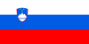
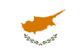
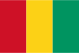
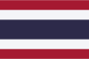
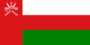

ALBANIË Skënderbeu Korçë
ALBANIË Skënderbeu Korçë OGUNJIMI, Marvin
OGUNJIMI, Marvin| ALBANIË |
|||||
|---|---|---|---|---|---|
| Club | Speler | Periode | Niveau | Periode OHL | Niveau OHL |
| Skënderbeu Korçë |
OGUNJIMI, Marvin |
2017 | Kategoria Superiore (1) | 2013–2014 (geleend) | Eerste Klasse (1) |
 AZERBEIDZJAN AZERBEIDZJAN |
|||||
|---|---|---|---|---|---|
| Club | Speler | Periode | Niveau | Periode OHL | Niveau OHL |
| Zirə |
BROGNO, Loris |
2021– | Azərbaycan Premyer Liqası (1) | 2012–2014 (uitgeleend 2013–2014) | Eerste Klasse (1) |
| BELGIË |
|||||
|---|---|---|---|---|---|
| Club | Speler | Periode | Niveau | Periode OHL | Niveau OHL |
| Eendracht Aalst |
BOUNOU, Mehdi |
2018–2019 | Eerste Klasse Amateur (3) | 2016–2017 | Eerste Klasse B (2) |
| DE VOEGHT, Kristof |
2002–2003 | Derde Klasse A (3) | 2003–2004 | Derde Klasse B (3) | |
| GILIS, Jo |
2019 (geleend) | Eerste Klasse Amateur (3) | 2018–2020 (uitgeleend 2019) 2020– (uitgeleend 2020–2021) |
Eerste Klasse B (2) Eerste Klasse A (1) |
|
| VEKEMANS, Daan |
2019 (geleend) | Eerste Klasse Amateur (3) | 2018–2020 (uitgeleend 2019) 2020– |
Eerste Klasse B (2) Eerste Klasse A (1) |
|
| Anderlecht |
DE MAN, Mark |
2002–2008 | Eerste Klasse (1) | 2011 (geleend) | Tweede Klasse (2) |
 HARBAOUI, Hamdi HARBAOUI, Hamdi |
2016–2017 (uitgeleend 2017) | Eerste Klasse A (1) | 2010–2011 | Tweede Klasse (2) | |
| KAMINSKI, Thomas |
2012–2016 (uitgeleend 2014–2016) | Eerste Klasse (1) | 2011–2012 | Eerste Klasse (1) | |
| ODOI, Denis |
2011–2013 | Eerste Klasse (1) | 2006–2009 | Tweede Klasse (2) | |
| Antwerp |
 BOSTOCK, John BOSTOCK, John |
2013–2014 | Tweede Klasse (2) | 2014–2015 2015–2016 |
Tweede Klasse (2) Eerste Klasse (1) |
| DAESELEIRE, Dimitri |
2013 (geleend) 2015–2017 |
Tweede Klasse (2) Tweede Klasse (2)/Eerste Klasse B (2) |
2017–2019 | Eerste Klasse B (2) | |
| DE ROECK, Jonas |
1997–1998 1998–2000 2000–2001 2013–2015 |
Eerste Klasse (1) Tweede Klasse (2) Eerste Klasse (1) Tweede Klasse (2) |
2012–2013 | Eerste Klasse (1) | |
| HAYEN, Nicky |
2012–2013 | Tweede Klasse (2) | 2010–2011 2011–2012 |
Tweede Klasse (2) Eerste Klasse (1) |
|
| LIMBOMBE, Stallone |
2014–2017 2017–2018 |
Eerste Klasse B (2) Eerste Klasse A (1) |
2020 2020–2021 |
Eerste Klasse B (2) Eerste Klasse A (1) |
|
| REMACLE, Jordan |
2016 | Eerste Klasse B (2) | 2010–2011 2011–2012 2015–2016 |
Tweede Klasse (2) Eerste Klasse (1) Eerste Klasse (1) |
|
| ROELANDTS, Kevin |
2012–2013 (geleend) | Tweede Klasse (2) | 2011–2013 (uitgeleend 2012–2013) | Eerste Klasse (1) | |
| Beerschot AC (2011–2013) Germinal Beerschot (1999–2011) |
DE MAN, Mark |
2009–2011 (uitgeleend 2011) | Eerste Klasse (1) | 2011 (geleend) | Tweede Klasse (2) |
| DE ROECK, Jonas |
2005–2007 | Eerste Klasse (1) | 2012–2013 | Eerste Klasse (1) | |
| KAMINSKI, Thomas |
2009–2011 | Eerste Klasse (1) | 2011–2012 | Eerste Klasse (1) | |
| MONTEYNE, Pieter-Jan |
2001–2011 | Eerste Klasse (1) | 2015–2016 2016–2017 |
Eerste Klasse (1) Eerste Klasse B (2) |
|
| OGUNJIMI, Marvin |
2013 (geleend) | Eerste Klasse (1) | 2013–2014 (geleend) | Eerste Klasse (1) | |
| ROELANDTS, Kevin |
2007 (geleend) | Eerste Klasse (1) | 2011–2013 (uitgeleend 2012–2013) | Eerste Klasse (1) | |
| SBAA, Nadir |
2000–2001 | Eerste Klasse (1) | 2006 | Tweede Klasse (2) | |
| STERCHELE, François |
2006–2007 | Eerste Klasse (1) | 2004–2005 | Derde Klasse B (3) | |
| Beerschot VA (2019– ) Beerschot-Wilrijk (2013–2019) |
BROGNO, Loris |
2018–2020 2020–2021 |
Eerste Klasse B (2) Eerste Klasse A (1) |
2012–2014 (uitgeleend 2013–2014) | Eerste Klasse (1) |
| ROMO, Rafael | 2017–2018 (geleend) | Eerste Klasse B (2) | 2020– | Eerste Klasse A (1) | |
| Beringen-Heusden-Zolder (2004–2006) Heusden-Zolder (1999–2004) |
BAILLY, Logan |
2003–2004 (geleend) | Eerste Klasse (1) | 2012–2014 2014–2015 |
Eerste Klasse (1) Tweede Klasse (2) |
| LENAERTS, Yves |
2004–2006 | Tweede Klasse (2) | 2010–2011 2011–2014 2014–2015 2015–2016 |
Tweede Klasse (2) Eerste Klasse (1) Tweede Klasse (2) Eerste Klasse (1) |
|
| Betekom |
JANSSENS, Kevin |
2018– | Derde Klasse Amateur VFV B (5)/Derde Afdeling VFV B (5) | 2005–2009 (uitgeleend 2008–2009) | Tweede Klasse (2) |
| Beveren (1935–2010) |
SBAA, Nadir |
2001–2002 | Eerste Klasse (1) | 2006 | Tweede Klasse (2) |
| Bierbeek |
DE MAN, Mark |
2013–2014 | Eerste Provinciale Brabant (5) | 2011 (geleend) | Tweede Klasse (2) |
| Bocholt |
SCHEELEN, Wouter |
2018– | Tweede Klasse Amateur VFV B (4)/Tweede Afdeling VFV B (4) | 2010–2011 (geleend) | Tweede Klasse (2) |
| Bornem |
JANSSENS, Kevin |
2011–2012 | Derde Klasse B (3) | 2005–2009 (uitgeleend 2008–2009) | Tweede Klasse (2) |
| Cappellen |
DE VOEGHT, Kristof |
1998–2000 | Tweede Klasse (2) | 2003–2004 | Derde Klasse B (3) |
| NJENGO, Leo |
2020 | Tweede Afdeling VFV B (4) | 2017–2019 (uitgeleend 2017–2018 & 2019) | Eerste Klasse B (2) | |
| Cercle Brugge |
MAERTENS, Mathieu |
2014–2015 2015–2017 |
Eerste Klasse (1) Tweede Klasse (2)/Eerste Klasse B (2) |
2017–2020 2020– |
Eerste Klasse B (2) Eerste Klasse A (1) |
 MERCIER, Xavier MERCIER, Xavier |
2017–2018 2018–2019 |
Eerste Klasse B (2) Eerste Klasse A (1) |
2019–2020 2020– |
Eerste Klasse B (2) Eerste Klasse A (1) |
|
| VAN EENOO, Lukas |
2008–2014 (uitgeleend 2014) | Eerste Klasse (1) | 2014 | Eerste Klasse (1) | |
| Charleroi |
BROGNO, Loris |
2011 2011 |
Eerste Klasse (1) Tweede Klasse (2) |
2012–2014 (uitgeleend 2013–2014) | Eerste Klasse (1) |
| GERAERTS, Karel |
2014–2016 | Eerste Klasse (1) | 2011–2014 | Eerste Klasse (1) | |
| HARBAOUI, Hamdi |
2017 (geleend) | Eerste Klasse A (1) | 2010–2011 | Tweede Klasse (2) | |
| REMACLE, Jordan |
2017–2018 | Eerste Klasse A (1) | 2010–2011 2011–2012 2015–2016 |
Tweede Klasse (2) Eerste Klasse (1) Eerste Klasse (1) |
|
 REZAEI, Kaveh REZAEI, Kaveh |
2017–2018 2019–2021 (geleend) |
Eerste Klasse A (1) Eerste Klasse A (1) |
2021– | Eerste Klasse A (1) | |
| RIOU, Rudy |
2011 | Eerste Klasse (1) | 2015–2016 | Eerste Klasse (1) | |
| STERCHELE, François |
2005–2006 | Eerste Klasse (1) | 2004–2005 | Derde Klasse B (3) | |
| Châtelet-Farciennes |
SBAA, Nadir |
2015–2016 | Vierde Klasse B (4) | 2006 | Tweede Klasse (2) |
| Club Brugge |
COOLS, Dion | 2015–2020 | Eerste Klasse (1)/Eerste Klasse A (1) | 2013–2014 2014–2015 |
Eerste Klasse (1) Tweede Klasse (2) |
| GERAERTS, Karel |
2000–2004 (uitgeleend 2004) 2007–2011 |
Eerste Klasse (1) Eerste Klasse (1) |
2011–2014 | Eerste Klasse (1) | |
| LENAERTS, Yves |
2006–2010 | Eerste Klasse (1) | 2010–2011 2011–2014 2014–2015 2015–2016 |
Tweede Klasse (2) Eerste Klasse (1) Tweede Klasse (2) Eerste Klasse (1) |
|
| ODOI, Denis |
2022– | Eerste Klasse A (1) | 2006–2009 | Tweede Klasse (2) | |
| REZAEI, Kaveh |
2018–2021 (uitgeleend 2019–2021) | Eerste Klasse A (1) | 2021– | Eerste Klasse A (1) | |
| ROELANDTS, Kevin |
2002–2007 (uitgeleend 2007) | Eerste Klasse (1) | 2011–2013 (uitgeleend 2012–2013) | Eerste Klasse (1) | |
 SOWAH, Kamal SOWAH, Kamal |
2021– (uitgeleend 2022– ) | Eerste Klasse A (1) | 2018–2020 (geleend) 2020–2021 (geleend) |
Eerste Klasse B (2) Eerste Klasse A (1) |
|
| STERCHELE, François |
2007–2008 | Eerste Klasse (1) | 2004–2005 | Derde Klasse B (3) | |
| STORM, Nikola |
2013–2018 (uitgeleend 2015–2016 & 2017–2018) | Eerste Klasse (1)/Eerste Klasse A (1) | 2017–2018 (geleend) | Eerste Klasse B (2) | |
 TOUBA, Ahmed TOUBA, Ahmed |
2016–2020 (uitgeleend 2018–2020) | Eerste Klasse A (1) | 2018–2019 (geleend) | Eerste Klasse B (2) | |
| VLIETINCK, Thibault |
2016– (uitgeleend 2020– ) | Eerste Klasse A (1) | 2020– (geleend) | Eerste Klasse A (1) | |
| Couvin-Mariembourg |
SBAA, Nadir |
2016–2017 | Tweede Klasse Amateur ACFF (4) | 2006 | Tweede Klasse (2) |
| Coxyde |
JANSSENS, Kevin |
2009–2010 | Derde Klasse A (3) | 2005–2009 (uitgeleend 2008–2009) | Tweede Klasse (2) |
| Deinze |
EL BANOUHI, Soufiane |
2020– | Eerste Klasse B (2) | 2016–2017 | Eerste Klasse B (2) |
| Dender EH |
HAYEN, Nicky |
2013–2014 | Derde Klasse A (3) | 2010–2011 2011–2012 |
Tweede Klasse (2) Eerste Klasse (1) |
| Dessel Sport |
NJENGO, Leo |
2016 2017–2018 (geleend) |
Eerste Klasse Amateur (3) | 2017–2019 (uitgeleend 2017–2018 & 2019) | Eerste Klasse B (2) |
| TAPOKO, Kevin |
2013–2014 | Tweede Klasse (2) | 2015 2015–2016 |
Tweede Klasse (2) Eerste Klasse (1) |
|
| Diest |
JANSSENS, Kevin |
2017–2018 | Derde Klasse Amateur VFV B (5) | 2005–2009 (uitgeleend 2008–2009) | Tweede Klasse (2) |
| LOKANDO, Jordy |
2020 | Derde Afdeling VFV B (5) | 2016–2018 (uitgeleend 2017–2018) | Eerste Klasse B (2) | |
| Eupen |
ASAMOAH, Samuel |
2012–2016 (uitgeleend 2015–2016) 2016–2017 |
Tweede Klasse (2) Eerste Klasse A (1) |
2015–2016 (geleend) | Eerste Klasse (1) |
| SCHOUTERDEN, Nils |
2013–2014 2017–2020 |
Tweede Klasse (2) Eerste Klasse A (1) |
2006–2009 | Tweede Klasse (2) | |
| ASV Geel (2013– ) Geel-Meerhout (2008–2013) |
JANSSENS, Kevin |
2010–2011 | Derde Klasse A (3) | 2005–2009 (uitgeleend 2008–2009) | Tweede Klasse (2) |
| LENAERTS, Yves |
2016–2018 | Eerste Klasse Amateur (3) | 2010–2011 2011–2014 2014–2015 2015–2016 |
Tweede Klasse (2) Eerste Klasse (1) Tweede Klasse (2) Eerste Klasse (1) |
|
| Verbroedering Geel (1924–2008) |
FRANCIS, Stijn |
2002–2004 | Tweede Klasse (2) | 2005 2005–2008 |
Derde Klasse B (3) Tweede Klasse (2) |
| Genk |
BAILLY, Logan |
2003–2008 (uitgeleend 2003–2004) 2012 (geleend) |
Eerste Klasse (1) Eerste Klasse (1) |
2012–2014 2014–2015 |
Eerste Klasse (1) Tweede Klasse (2) |
| CROUX, Jordy |
2012–2015 (uitgeleend 2014–2015) | Eerste Klasse (1) | 2014 | Eerste Klasse (1) | |
| DAESELEIRE, Dimitri |
2008–2011 | Eerste Klasse (1) | 2017–2019 | Eerste Klasse B (2) | |
 DESSERS, Cyriel DESSERS, Cyriel |
2020– (uitgeleend 2021– ) | Eerste Klasse A (1) | 2014 | Eerste Klasse (1) | |
| GORIUS, Julien |
2002–2016 | Eerste Klasse (1) | 2017–2019 | Eerste Klasse B (2) | |
| HUBERT, David |
2007–2013 (uitgeleend 2013) | Eerste Klasse (1) | 2017–2020 2020–2021 |
Eerste Klasse B (2) Eerste Klasse A (1) |
|
| OGUNJIMI, Marvin |
2004–2011 (uitgeleend 2007–2008) | Eerste Klasse (1) | 2013–2014 (geleend) | Eerste Klasse (1) | |
| REMACLE, Jordan |
2004–2006 | Eerste Klasse (1) | 2010–2011 2011–2012 2015–2016 |
Tweede Klasse (2) Eerste Klasse (1) Eerste Klasse (1) |
|
| TROSSARD, Leandro |
2012–2019 (uitgeleend 2013–2016) | Eerste Klasse (1)/Eerste Klasse A (1) | 2015–2016 (geleend) | Eerste Klasse (1) | |
| Gent |
DE ROECK, Jonas |
2007–2009 | Eerste Klasse (1) | 2012–2013 | Eerste Klasse (1) |
| HUBERT, David |
2013 (geleend) 2013–2017 (uitgeleend 2014–2017) |
Eerste Klasse (1) Eerste Klasse (1)/Eerste Klasse A (1) |
2017–2020 2020–2021 |
Eerste Klasse B (2) Eerste Klasse A (1) |
|
| KAMINSKI, Thomas |
2019–2020 | Eerste Klasse A (1) | 2011–2012 | Eerste Klasse (1) | |
| LIMBOMBE, Stallone |
2018–2019 (uitgeleend 2019) | Eerste Klasse A (1) | 2020 2020–2021 |
Eerste Klasse B (2) Eerste Klasse A (1) |
|
| MATTON, Thomas |
2015–2017 | Eerste Klasse (1)/Eerste Klasse A (1) | 2007–2008 | Tweede Klasse (2) | |
| REMACLE, Jordan |
2012–2013 (uitgeleend 2013) | Eerste Klasse (1) | 2010–2011 2011–2012 2015–2016 |
Tweede Klasse (2) Eerste Klasse (1) Eerste Klasse (1) |
|
| SCHOOFS, Lucas |
2015–2019 (uitgeleend 2015–2016 & 2017 & 2018–2019) | Eerste Klasse (1)/Eerste Klasse A (1) | 2017 (geleend) | Eerste Klasse B (2) | |
| TABEKOU, Serge | 2015–2017 (uitgeleend 2016–2017) | Eerste Klasse (1)/Eerste Klasse A (1) | 2016–2017 (geleend) | Eerste Klasse B (2) | |
| Hamme |
LOKANDO, Jordy |
2021– | Derde Afdeling VFV A (5) | 2016–2018 (uitgeleend 2017–2018) | Eerste Klasse B (2) |
| MONTEYNE, Pieter-Jan |
2018–2019 | Tweede Klasse Amateur VFV B (4) | 2015–2016 2016–2017 |
Eerste Klasse (1) Eerste Klasse B (2) |
|
| Hasselt |
BOUNOU, Mehdi |
2019–2020 | Tweede Klasse Amateur VFV B (4) | 2016–2017 | Eerste Klasse B (2) |
| DE MAN, Mark |
2011–2012 | Derde Klasse B (3) | 2011 (geleend) | Tweede Klasse (2) | |
| Heist |
BOUNOU, Mehdi |
2017–2018 | Eerste Klasse Amateur (3) | 2016–2017 | Eerste Klasse B (2) |
| GILIS, Jo |
2021 (geleend) | Eerste Nationale (3) | 2018–2020 (uitgeleend 2019) 2020– (uitgeleend 2020–2021) |
Eerste Klasse B (2) Eerste Klasse A (1) |
|
| LOKANDO, Jordy |
2017–2018 (geleend) | Eerste Klasse Amateur (3) | 2016–2018 (uitgeleend 2017–2018) | Eerste Klasse B (2) | |
| NJENGO, Leo |
2019 (geleend) | Eerste Klasse Amateur (3) | 2017–2019 (uitgeleend 2017–2018 & 2019) | Eerste Klasse B (2) | |
| Herstal |
REMACLE, Jordan |
2019–2021 | Division 3 Amateur ACFF B (5)/Division 3 ACFF B (5) | 2010–2011 2011–2012 2015–2016 |
Tweede Klasse (2) Eerste Klasse (1) Eerste Klasse (1) |
| Kortrijk |
KAMINSKI, Thomas |
2016–2018 | Eerste Klasse A (1) | 2011–2012 | Eerste Klasse (1) |
 KEET, Darren KEET, Darren |
2011–2016 | Eerste Klasse (1) | 2019–2020 2020 |
Eerste Klasse B (2) Eerste Klasse A (1) |
|
| MATTON, Thomas |
2012–2015 | Eerste Klasse (1) | 2007–2008 | Tweede Klasse (2) | |
| MERCIER, Xavier |
2016–2017 | Eerste Klasse A (1) | 2019–2020 2020– |
Eerste Klasse B (2) Eerste Klasse A (1) |
|
| VAN EENOO, Lukas |
2014–2018 (uitgeleend 2016–2017 & 2018) | Eerste Klasse (1)/Eerste Klasse A (1) | 2014 | Eerste Klasse (1) | |
| La Calamine |
REMACLE, Jordan |
2021– | Provinciale 1 Liège (6) | 2010–2011 2011–2012 2015–2016 |
Tweede Klasse (2) Eerste Klasse (1) Eerste Klasse (1) |
| STERCHELE, François |
2001–2002 2002–2004 |
Provinciale 1 Liège (5) Vierde Klasse D (4) |
2004–2005 | Derde Klasse B (3) | |
| Stade Leuven |
DE VOEGHT, Kristof |
2000–2002 | Derde Klasse B (3) | 2003–2004 | Derde Klasse B (3) |
| RFC Liège |
SBAA, Nadir |
2010 | Derde Klasse B (3) | 2006 | Tweede Klasse (2) |
| Lierse (1906–2018) |
DE ROECK, Jonas |
2001–2005 | Eerste Klasse (1) | 2012–2013 | Eerste Klasse (1) |
| NGAWA, Pierre-Yves |
2014–2015 | Eerste Klasse (1) | 2015–2016 2016–2017 2019–2020 2020– |
Eerste Klasse (1) Eerste Klasse B (2) Eerste Klasse B (2) Eerste Klasse A (1) |
|
| WATT, Tony | 2013–2014 (geleend) | Eerste Klasse (1) | 2017–2018 | Eerste Klasse B (2) | |
| WEUTS, Koen |
2007–2009 2015–2018 |
Tweede Klasse (2) Tweede Klasse/Eerste Klasse B (2) |
2009–2011 2011–2013 |
Tweede Klasse (2) Eerste Klasse (1) |
|
| Lierse Kempenzonen (2018– ) Oosterzonen Oosterwijk (1943–2018) |
GILIS, Jo |
2020–2021 (geleend) | Eerste Klasse B (2) | 2018–2020 (uitgeleend 2019) 2020– (uitgeleend 2020–2021) |
Eerste Klasse B (2) Eerste Klasse A (1) |
| GILLEKENS, Jordy |
2021 (geleend) 2021– |
Eerste Klasse B (2) Eerste Klasse B (2) |
2017–2020 (uitgeleend 2018–2019) 2020–2021 (uitgeleend 2021) |
Eerste Klasse B (2) Eerste Klasse A (1) |
|
| LAES, Brent |
2021 (geleend) 2021– |
Eerste Klasse B (2) Eerste Klasse B (2) |
2019–2020 2020–2021 (uitgeleend 2021) |
Eerste Klasse B (2) Eerste Klasse A (1) |
|
| LIMBOMBE, Stallone |
2013–2014 2021– |
Derde Klasse B (3) Eerste Klasse B (2) |
2020 2020–2021 |
Eerste Klasse B (2) Eerste Klasse A (1) |
|
| OGUNJIMI, Marvin |
2019 | Eerste Klasse Amateur (3) | 2013–2014 (geleend) | Eerste Klasse (1) | |
| SCHOUTERDEN, Nils |
2021– | Eerste Klasse B (2) | 2006–2009 | Tweede Klasse (2) | |
| SCHUERMANS, Kenneth |
2021– | Eerste Klasse B (2) | 2017–2020 2020–2021 |
Eerste Klasse B (2) Eerste Klasse A (1) |
|
| Lokeren |
DESSERS, Cyriel |
2014–2016 | Eerste Klasse (1) | 2014 | Eerste Klasse (1) |
| GERAERTS, Karel |
2004 (geleend) | Eerste Klasse (1) | 2011–2014 | Eerste Klasse (1) | |
| HARBAOUI, Hamdi |
2011–2014 2015–2016 |
Eerste Klasse (1) Eerste Klasse (1) |
2010–2011 | Tweede Klasse (2) | |
| ODOI, Denis |
2013–2016 | Eerste Klasse (1) | 2006–2009 | Tweede Klasse (2) | |
| REMACLE, Jordan |
2013–2015 | Eerste Klasse (1) | 2010–2011 2011–2012 2015–2016 |
Tweede Klasse (2) Eerste Klasse (1) Eerste Klasse (1) |
|
| Lokeren-Temse |
LOKANDO, Jordy |
2020–2021 | Tweede Afdeling VFV A (4) | 2016–2018 (uitgeleend 2017–2018) | Eerste Klasse B (2) |
| NJENGO, Leo |
2022– | Tweede Afdeling VFV A (4) | 2017–2019 (uitgeleend 2017–2018 & 2019) | Eerste Klasse B (2) | |
| Lommel (2017– ) Lommel United (2010–2017) KVSK United (2003–2010) Overpelt Fabriek ( –2003) |
BROGNO, Loris |
2013–2014 (geleend) | Tweede Klasse (2) | 2012–2014 (uitgeleend 2013–2014) | Eerste Klasse (1) |
| EL BANOUHI, Soufiane |
2018–2019 (geleend) | Eerste Klasse B (2) | 2016–2017 | Eerste Klasse B (2) | |
| RAYMAEKERS, Wim |
2007–2009 | Tweede Klasse (2) | 2010–2011 2011–2014 |
Tweede Klasse (2) Eerste Klasse (1) |
|
| SCHEELEN, Wouter |
2002–2005 2005–2006 2008 (geleend) 2010 (geleend) 2012–2017 2017–2018 |
Derde Klasse B (3) Tweede Klasse (2) Tweede Klasse (2) Tweede Klasse (2) Tweede Klasse (2)/Eerste Klasse B (2) Eerste Klasse Amateur (3) |
2010–2011 (geleend) | Tweede Klasse (2) | |
| SCHOOFS, Lucas |
2014–2015 2015–2016 (geleend) |
Tweede Klasse (2) Tweede Klasse (2) |
2017 (geleend) | Eerste Klasse B (2) | |
| SULA, Din |
2017–2018 (geleend) | Eerste Klasse Amateur (3) | 2015 2015–2016 2016–2018 (uitgeleend 2017–2018) |
Tweede Klasse (2) Eerste Klasse (1) Eerste Klasse B (2) |
|
| TROSSARD, Leandro |
2013 (geleend) 2014–2015 (geleend) |
Tweede Klasse (2) Tweede Klasse (2) |
2015–2016 (geleend) | Eerste Klasse (1) | |
| Londerzeel |
DAESELEIRE, Dimitri |
2021– | Tweede Afdeling VFV B (4) | 2017–2019 | Eerste Klasse B (2) |
| DE VOEGHT, Kristof |
2008–2009 | Vierde Klasse B (4) | 2003–2004 | Derde Klasse B (3) | |
| Lubbeek |
DE VOEGHT, Kristof |
2010–2011 | Eerste Provinciale Brabant (5) | 2003–2004 | Derde Klasse B (3) |
| FRANCIS, Stijn |
2012–2013 | Eerste Provinciale Brabant (5) | 2005 2005–2008 |
Derde Klasse B (3) Tweede Klasse (2) |
|
| Lyra-Lierse Berlaar |
WEUTS, Koen |
2019–2020 2020– |
Derde Klasse Amateur VFV B (5) Tweede Afdeling VFV B (4) |
2009–2011 2011–2013 |
Tweede Klasse (2) Eerste Klasse (1) |
| Maldegem |
ROELANDTS, Kevin |
2013–2014 | Eerste Provinciale Oost-Vlaanderen (5) | 2011–2013 (uitgeleend 2012–2013) | Eerste Klasse (1) |
| KV Mechelen |
 BAGAYOKO, Mamadou BAGAYOKO, Mamadou |
2018 (geleend) 2018–2019 (uitgeleend 2019) 2019–2020 |
Eerste Klasse A (1) Eerste Klasse B (2) Eerste Klasse A (1) |
2017–2018 (uitgeleend 2018) | Eerste Klasse B (2) |
| GORIUS, Julien |
2008–2012 | Eerste Klasse (1) | 2017–2019 | Eerste Klasse B (2) | |
| RAEMAEKERS, Toon |
2022– | Eerste Klasse A (1) | 2020 2020–2022 |
Eerste Klasse B (2) Eerste Klasse A (1) |
|
| SCHOUTERDEN, Nils |
2016–2017 | Eerste Klasse A (1) | 2006–2009 | Tweede Klasse (2) | |
| STORM, Nikola |
2018–2019 2019– |
Eerste Klasse B (2) Eerste Klasse A (1) |
2017–2018 (geleend) | Eerste Klasse B (2) | |
| Racing Mechelen |
DE VOEGHT, Kristof |
1995–1998 | Derde Klasse A (3)/Derde Klasse B (3) | 2003–2004 | Derde Klasse B (3) |
| Meux |
SBAA, Nadir |
2011–2015 | Vierde Klasse D (4) | 2006 | Tweede Klasse (2) |
| RAEC Mons (1910–2015) |
BROGNO, Loris |
2014–2015 | Tweede Klasse (2) | 2012–2014 (uitgeleend 2013–2014) | Eerste Klasse (1) |
| MONTEYNE, Pieter-Jan |
2011–2014 | Eerste Klasse (1) | 2015–2016 2016–2017 |
Eerste Klasse (1) Eerste Klasse B (2) |
|
| RAEC Mons |
OGUNJIMI, Marvin |
2021– | Division 3 ACFF A (5) | 2013–2014 (geleend) | Eerste Klasse (1) |
| Excel Mouscron (2016– ) Mouscron-Péruwelz (2010–2016) |
GILLEKENS, Nick |
2019–2021 2021– |
Eerste Klasse A (1) Eerste Klasse B (2) |
2014–2015 2015–2016 2016–2019 |
Tweede Klasse (2) Eerste Klasse (1) Eerste Klasse B (2) |
| HARBAOUI, Hamdi |
2021 | Eerste Klasse A (1) | 2010–2011 | Tweede Klasse (2) | |
| HUBERT, David |
2015–2017 (geleend) | Eerste Klasse (1)/Eerste Klasse A (1) | 2017–2020 2020–2021 |
Eerste Klasse B (2) Eerste Klasse A (1) |
|
| MONTEYNE, Pieter-Jan |
2014–2015 | Eerste Klasse (1) | 2015–2016 2016–2017 |
Eerste Klasse (1) Eerste Klasse B (2) |
|
| TABEKOU, Serge | 2020–2021 2021– (uitgeleend 2021– ) |
Eerste Klasse A (1) Eerste Klasse B (2) |
2016–2017 (geleend) | Eerste Klasse B (2) | |
| TAPOKO, Kevin |
2016 | Eerste Klasse (1) | 2015 2015–2016 |
Tweede Klasse (2) Eerste Klasse (1) |
|
| Excelsior Mouscron (1922–2009) |
HARBAOUI, Hamdi |
2008 (geleend) | Eerste Klasse (1) | 2010–2011 | Tweede Klasse (2) |
| UR Namur Fosses-La-Ville (2018– ) UR Namur (1996–2018) |
BAILLY, Logan |
2020 | Division 2 Amateur ACFF (4) | 2012–2014 2014–2015 |
Eerste Klasse (1) Tweede Klasse (2) |
| SBAA, Nadir |
1998–2000 2007 2007–2008 2011 |
Derde Klasse B (3) Derde Klasse B (3) Tweede Klasse (2) Derde Klasse B (3) |
2006 | Tweede Klasse (2) | |
| Olympic Charleroi |
SBAA, Nadir |
2008–2009 | Tweede Klasse (2) | 2006 | Tweede Klasse (2) |
| Out-Hoegaarden |
DE MAN, Mark |
2014–2015 | Tweede Provinciale Brabant B (6) | 2011 (geleend) | Tweede Klasse (2) |
| Tempo Overijse |
DE VOEGHT, Kristof |
2008 2009–2010 |
Vierde Klasse B (4) Vierde Klasse B (4) |
2003–2004 | Derde Klasse B (3) |
| FRANCIS, Stijn |
2008–2009 2009–2012 |
Eerste Provinciale Brabant (5) Vierde Klasse B (4) |
2005 2005–2008 |
Derde Klasse B (3) Tweede Klasse (2) |
|
| JANSSENS, Kevin |
2013–2015 2015–2016 2016–2017 |
Vierde Klasse B (4) Derde Klasse B (3) Tweede Klasse Amateur VFV B (4) |
2005–2009 (uitgeleend 2008–2009) | Tweede Klasse (2) | |
| Patro Eisden Maasmechelen |
BOUNOU, Mehdi |
2020– | Eerste Nationale (3) | 2016–2017 | Eerste Klasse B (2) |
| SULA, Din |
2022– (geleend) | Eerste Nationale (3) | 2015 2015–2016 2016–2018 (uitgeleend 2017–2018) |
Tweede Klasse (2) Eerste Klasse (1) Eerste Klasse B (2) |
|
| OGUNJIMI, Marvin |
2019–2020 | Eerste Klasse Amateur (3) | 2013–2014 (geleend) | Eerste Klasse (1) | |
| Roeselare (1921–2020) |
DAESELEIRE, Dimitri |
2020 | Eerste Klasse Amateur (3) | 2017–2019 | Eerste Klasse B (2) |
| MONTEYNE, Pieter-Jan |
2000–2001 2017–2018 |
Tweede Klasse (2) Eerste Klasse B (2) |
2015–2016 2016–2017 |
Eerste Klasse (1) Eerste Klasse B (2) |
|
| VAN EENOO, Lukas |
2016–2017 (geleend) | Eerste Klasse B (2) | 2014 | Eerste Klasse (1) | |
| Rupel Boom |
DAESELEIRE, Dimitri |
2019–2020 | Eerste Klasse Amateur (3) | 2017–2019 | Eerste Klasse B (2) |
| RWDM (2015– ) |
LOKANDO, Jordy |
2018 | Eerste Klasse Amateur (3) | 2016–2018 (uitgeleend 2017–2018) | Eerste Klasse B (2) |
| WEUTS, Koen |
2019 | Eerste Klasse Amateur (3) | 2009–2011 2011–2013 |
Tweede Klasse (2) Eerste Klasse (1) |
|
| RWDM Brussels (2013–2014) FC Molenbeek Brussels Strombeek (2003–2013) |
EL BANOUHI, Soufiane |
2011–2013 | Tweede Klasse (2) | 2016–2017 | Eerste Klasse B (2) |
| GORIUS, Julien |
2005–2008 | Eerste Klasse (1) | 2017–2019 | Eerste Klasse B (2) | |
| Sint-Truiden |
ASAMOAH, Samuel |
2017–2021 | Eerste Klasse A (1) | 2015–2016 (geleend) | Eerste Klasse (1) |
| BAGAYOKO, Mamadou |
2015–2017 | Eerste Klasse (1)/Eerste Klasse A (1) | 2017–2018 (uitgeleend 2018) | Eerste Klasse B (2) | |
| DAESELEIRE, Dimitri |
2011–2012 2012–2015 (uitgeleend 2013) |
Eerste Klasse (1) Tweede Klasse (2) |
2017–2019 | Eerste Klasse B (2) | |
| HAYEN, Nicky |
1999–2008 | Eerste Klasse (1) | 2010–2011 2011–2012 |
Tweede Klasse (2) Eerste Klasse (1) |
|
| NGAWA, Pierre-Yves |
2011–2012 (geleend) 2012–2013 (geleend) |
Eerste Klasse (1) Tweede Klasse (2) |
2015–2016 2016–2017 2019–2020 2020– |
Eerste Klasse (1) Eerste Klasse B (2) Eerste Klasse B (2) Eerste Klasse A (1) |
|
| ODOI, Denis |
2009–2011 | Eerste Klasse (1) | 2006–2009 | Tweede Klasse (2) | |
| SCHOUTERDEN, Nils |
2009–2012 2012–2013 |
Eerste Klasse (1) Tweede Klasse (2) |
2006–2009 | Tweede Klasse (2) | |
| Solières Sport |
REMACLE, Jordan |
2018–2019 | Division 2 Amateur ACFF (4) | 2010–2011 2011–2012 2015–2016 |
Tweede Klasse (2) Eerste Klasse (1) Eerste Klasse (1) |
| Standard Liège |
GERAERTS, Karel |
2004–2007 | Eerste Klasse (1) | 2011–2014 | Eerste Klasse (1) |
| NGAWA, Pierre-Yves |
2011–2014 (uitgeleend 2011–2014) | Eerste Klasse (1) | 2015–2016 2016–2017 2019–2020 2020– |
Eerste Klasse (1) Eerste Klasse B (2) Eerste Klasse B (2) Eerste Klasse A (1) |
|
| OGUNJIMI, Marvin |
2012 (geleend) | Eerste Klasse (1) | 2013–2014 (geleend) | Eerste Klasse (1) | |
| WATT, Tony | 2014 | Eerste Klasse (1) | 2017–2018 | Eerste Klasse B (2) | |
| Tubize |
HENRY, Thomas |
2018–2019 | Eerste Klasse B (2) | 2019–2020 2020–2021 |
Eerste Klasse B (2) Eerste Klasse A (1) |
| SBAA, Nadir |
2002–2003 2003–2006 |
Derde Klasse B (3) Tweede Klasse (2) |
2006 | Tweede Klasse (2) | |
| SHENGELIA, Levan | 2015–2018 (uitgeleend 2017) | Tweede Klasse (2)/Eerste Klasse B (2) | 2021– | Eerste Klasse A (1) | |
| Union SG |
EL BANOUHI, Soufiane |
2017–2020 (uitgeleend 2018–2019) | Eerste Klasse B (2) | 2016–2017 | Eerste Klasse B (2) |
| TABEKOU, Serge | 2017–2020 | Eerste Klasse B (2) | 2016–2017 (geleend) | Eerste Klasse B (2) | |
| Veldwezelt |
DE MAN, Mark |
2012 | Vierde Klasse C (4) | 2011 (geleend) | Tweede Klasse (2) |
| Virton |
SULA, Din |
2021– (uitgeleend 2022– ) | Eerste Klasse B (2) | 2015 2015–2016 2016–2018 (uitgeleend 2017–2018) |
Tweede Klasse (2) Eerste Klasse (1) Eerste Klasse B (2) |
| CS Visé (1924–2015) |
HARBAOUI, Hamdi |
2008–2010 | Derde Klasse B (3) | 2010–2011 | Tweede Klasse (2) |
| SBAA, Nadir |
2010 | Derde Klasse B (3) | 2006 | Tweede Klasse (2) | |
| URSL Visé |
NJENGO, Leo |
2019–2020 | Eerste Klasse Amateur (3) | 2017–2019 (uitgeleend 2017–2018 & 2019) | Eerste Klasse B (2) |
| Waasland-Beveren (2010– ) Waasland (2002–2010) |
HUBERT, David |
2014–2015 (geleend) | Eerste Klasse (1) | 2017–2020 2020–2021 |
Eerste Klasse B (2) Eerste Klasse A (1) |
| RAYMAEKERS, Wim |
2009–2010 | Tweede Klasse (2) | 2010–2011 2011–2014 |
Tweede Klasse (2) Eerste Klasse (1) |
|
| REMACLE, Jordan |
2013 (geleend) | Eerste Klasse (1) | 2010–2011 2011–2012 2015–2016 |
Tweede Klasse (2) Eerste Klasse (1) Eerste Klasse (1) |
|
| SULA, Din |
2018–2021 | Eerste Klasse A (1) | 2015 2015–2016 2016–2018 (uitgeleend 2017–2018) |
Tweede Klasse (2) Eerste Klasse (1) Eerste Klasse B (2) |
|
| Westerlo |
FRANCIS, Stijn |
2000–2002 | Eerste Klasse (1) | 2005 2005–2008 |
Derde Klasse B (3) Tweede Klasse (2) |
| NJENGO, Leo |
2015–2016 | Eerste Klasse (1) | 2017–2019 (uitgeleend 2017–2018 & 2019) | Eerste Klasse B (2) | |
 ROUGKALAS, Konstantinos ROUGKALAS, Konstantinos |
2017–2018 | Eerste Klasse B (2) | 2015–2016 | Eerste Klasse (1) | |
| SCHEELEN, Wouter |
2006–2012 (uitgeleend 2008 & 2010–2012) | Eerste Klasse (1) | 2010–2011 (geleend) | Tweede Klasse (2) | |
| SCHOUTERDEN, Nils |
2014–2016 | Eerste Klasse (1) | 2006–2009 | Tweede Klasse (2) | |
| SCHUERMANS, Kenneth |
2012 2012–2014 2014–2017 |
Eerste Klasse (1) Tweede Klasse (2) Eerste Klasse (1)/Eerste Klasse A (1) |
2017–2020 2020–2021 |
Eerste Klasse B (2) Eerste Klasse A (1) |
|
| TROSSARD, Leandro |
2013–2014 (geleend) | Tweede Klasse (2) | 2015–2016 (geleend) | Eerste Klasse (1) | |
| VAN EENOO, Lukas |
2018 (geleend) 2018– |
Eerste Klasse B (2) Eerste Klasse B (2) |
2014 | Eerste Klasse (1) | |
| White Star Bruxelles (2013–2017) White Star Woluwe (1994–2013) |
EL BANOUHI, Soufiane |
2013–2016 | Tweede Klasse (2) | 2016–2017 | Eerste Klasse B (2) |
| TAPOKO, Kevin |
2016–2017 | Eerste Klasse Amateur (3) | 2015 2015–2016 |
Tweede Klasse (2) Eerste Klasse (1) |
|
| Olympia Wijgmaal |
JANSSENS, Kevin |
2012–2013 | Vierde Klasse B (4) | 2005–2009 (uitgeleend 2008–2009) | Tweede Klasse (2) |
| Willebroek-Meerhof |
DE VOEGHT, Kristof |
2004–2005 2005–2007 |
Vierde Klasse B (4) Derde Klasse A (3) |
2003–2004 | Derde Klasse B (3) |
| Woluwe-Zaventem |
JANSSENS, Kevin |
2008–2009 (geleend) | Derde Klasse A (3) | 2005–2009 (uitgeleend 2008–2009) | Tweede Klasse (2) |
| Zonhoven |
RAYMAEKERS, Wim |
2016–2017 | Eerste Provinciale Limburg (5) | 2010–2011 2011–2014 |
Tweede Klasse (2) Eerste Klasse (1) |
| Zulte Waregem |
COOLS, Dion | 2022– (geleend) | Eerste Klasse A (1) | 2013–2014 2014–2015 |
Eerste Klasse (1) Tweede Klasse (2) |
| HARBAOUI, Hamdi |
2018–2019 | Eerste Klasse A (1) | 2010–2011 | Tweede Klasse (2) | |
| HUBERT, David |
2021– | Eerste Klasse A (1) | 2017–2020 2020–2021 |
Eerste Klasse B (2) Eerste Klasse A (1) |
|
| MATTON, Thomas |
2008–2012 | Eerste Klasse (1) | 2007–2008 | Tweede Klasse (2) | |
| ROELANDTS, Kevin |
2007–2011 | Eerste Klasse (1) | 2011–2013 (uitgeleend 2012–2013) | Eerste Klasse (1) | |
| STORM, Nikola |
2015–2016 (geleend) | Eerste Klasse (1) | 2017–2018 (geleend) | Eerste Klasse B (2) |
 BOSNIË EN HERZEGOVINA BOSNIË EN HERZEGOVINA |
|||||
|---|---|---|---|---|---|
| Club | Speler | Periode | Niveau | Periode OHL | Niveau OHL |
| Široki Brijeg |
 BLOUDEK, Sandro | 2012 | Premijer liga Bosne i Hercegovine (1) | 2010–2011 | Tweede Klasse (2) |
 BULGARIJE BULGARIJE |
|||||
|---|---|---|---|---|---|
| Club | Speler | Periode | Niveau | Periode OHL | Niveau OHL |
| Beroe Stara Zagora |
BANDALOVSKI, Ivan |
2018–2019 | Parva Liga (1) | 2013–2014 | Eerste Klasse (1) |
| TAPOKO, Kevin |
2022– (geleend) | Parva Liga (1) | 2015 2015–2016 |
Tweede Klasse (2) Eerste Klasse (1) |
|
| TOUBA, Ahmed |
2019–2020 (geleend) | Parva Liga (1) | 2018–2019 (geleend) | Eerste Klasse B (2) | |
| Botev Plovdiv |
BANDALOVSKI, Ivan |
2020 | Parva Liga (1) | 2013–2014 | Eerste Klasse (1) |
| CSKA Sofia |
BANDALOVSKI, Ivan |
2010–2013 | A Football Group (1) | 2013–2014 | Eerste Klasse (1) |
| MALINOV, Kristiyan |
2016–2020 (gedeeld CSKA Sofia II) | Parva Liga (1) | 2020– | Eerste Klasse A (1) | |
| WATT, Tony | 2019 | Parva Liga (1) | 2017–2018 | Eerste Klasse B (2) | |
| CSKA Sofia II |
MALINOV, Kristiyan |
2016–2017 (gedeeld CSKA Sofia) | Vtora liga (2) | 2020– | Eerste Klasse A (1) |
| Dobrudzha |
MALINOV, Kristiyan |
2013–2014 (geleend) | B Football Group (2) | 2020– | Eerste Klasse A (1) |
| Litex Lovech |
BANDALOVSKI, Ivan |
2004–2007 (uitgeleend 2005–2006) | A Football Group (1) | 2013–2014 | Eerste Klasse (1) |
| MALINOV, Kristiyan |
2013–2016 (gedeeld Litex Lovech II) (uitgeleend 2013–2014) | A Football Group (1) | 2020– | Eerste Klasse A (1) | |
| Litex Lovech II |
MALINOV, Kristiyan |
2016 (gedeeld Litex Lovech) | B Football Group (2) | 2020– | Eerste Klasse A (1) |
| Lokomotiv Sofia |
BANDALOVSKI, Ivan |
2008–2010 | A Football Group (1) | 2013–2014 | Eerste Klasse (1) |
| Tsarsko Selo Sofia |
BANDALOVSKI, Ivan |
2020–2021 | Parva Liga (1) | 2013–2014 | Eerste Klasse (1) |
| Vereya Stara Zagora |
BANDALOVSKI, Ivan |
2017 | Parva Liga (1) | 2013–2014 | Eerste Klasse (1) |
 CANADA CANADA |
|||||
|---|---|---|---|---|---|
| Club | Speler | Periode | Niveau | Periode OHL | Niveau OHL |
| Forge |
BORGES, Tristan |
2019 2021– (geleend) |
Canadian Premier League (1) Canadian Premier League (1) |
2020 2020– (uitgeleend 2021– ) |
Eerste Klasse B (2) Eerste Klasse A (1) |
| Sigma |
BORGES, Tristan |
2018 | League1 Ontario (3) | 2020 2020– (uitgeleend 2021– ) |
Eerste Klasse B (2) Eerste Klasse A (1) |
| Toronto Academy |
BORGES, Tristan |
2015 | League1 Ontario (3) | 2020 2020– (uitgeleend 2021– ) |
Eerste Klasse B (2) Eerste Klasse A (1) |
 CHINA CHINA |
|||||
|---|---|---|---|---|---|
| Club | Speler | Periode | Niveau | Periode OHL | Niveau OHL |
| Changchun Yatai |
GORIUS, Julien |
2016 | Chinese Super League (1) | 2017–2019 | Eerste Klasse B (2) |
| Liaoning |
OGBU, Derick |
2014–2015 | Chinese Super League (1) | 2011–2013 | Eerste Klasse (1) |
|  CYPRUS | |||||
|---|---|---|---|---|---|
| Club | Speler | Periode | Niveau | Periode OHL | Niveau OHL |
| AEK Larnaca | SCHOUTERDEN, Nils |
2021 | Protáthlima A΄ Katigorías (1) | 2006–2009 | Tweede Klasse (2) |
| AEL Limassol | ROMO, Rafael | 2016–2017 | Protáthlima A΄ Katigorías (1) | 2020– | Eerste Klasse A (1) |
| Anorthosis Famagusta | BANDALOVSKI, Ivan |
2017 | Protáthlima A΄ Katigorías (1) | 2013–2014 | Eerste Klasse (1) |
| KAMINSKI, Thomas |
2014–2015 (geleend) | Protáthlima A΄ Katigorías (1) | 2011–2012 | Eerste Klasse (1) | |
| APOEL | ROMO, Rafael | 2017–2019 (uitgeleend 2017–2018) | Protáthlima A΄ Katigorías (1) | 2020– | Eerste Klasse A (1) |
| Aris Limassol | TAPOKO, Kevin |
2018 | Protáthlima A΄ Katigorías (1) | 2015 2015–2016 |
Tweede Klasse (2) Eerste Klasse (1) |
 DENEMARKEN DENEMARKEN |
|||||
|---|---|---|---|---|---|
| Club | Speler | Periode | Niveau | Periode OHL | Niveau OHL |
| København |
KAMINSKI, Thomas |
2015–2016 (geleend) | Superligaen (1) | 2011–2012 | Eerste Klasse (1) |
| Midtjylland |
COOLS, Dion | 2020– (uitgeleend 2022– ) | Superligaen (1) | 2013–2014 2014–2015 |
Eerste Klasse (1) Tweede Klasse (2) |
|  KABA, Sory | 2019– (uitgeleend 2021– ) | Superligaen (1) | 2021– (geleend) | Eerste Klasse A (1) | |
| Silkeborg |
ROMO, Rafael | 2019–2020 | Superligaen (1) | 2020– | Eerste Klasse A (1) |
 DUITSLAND DUITSLAND |
|||||
|---|---|---|---|---|---|
| Club | Speler | Periode | Niveau | Periode OHL | Niveau OHL |
| Augsburg |
DE ROECK, Jonas |
2009–2011 2011–2012 |
2. Bundesliga (2) Bundesliga (1) |
2012–2013 | Eerste Klasse (1) |
| Borussia Mönchengladbach |
BAILLY, Logan |
2009–2012 (gedeeld Borussia Mönchengladbach II) (uitgeleend 2011 & 2012) | Bundesliga (1) | 2012–2014 2014–2015 |
Eerste Klasse (1) Tweede Klasse (2) |
| Borussia Mönchengladbach II |
BAILLY, Logan |
2009 (gedeeld Borussia Mönchengladbach) | Regionalliga West (4) | 2012–2014 2014–2015 |
Eerste Klasse (1) Tweede Klasse (2) |
| Freiburg |
 KAPUSTKA, Bartosz KAPUSTKA, Bartosz |
2017–2018 (geleend & gedeeld Freiburg II) | Bundesliga (1) | 2018–2019 (geleend) | Eerste Klasse B (2) |
| Freiburg II |
KAPUSTKA, Bartosz |
2017–2018 (geleend & gedeeld Freiburg) | Regionalliga Südwest (4) | 2018–2019 (geleend) | Eerste Klasse B (2) |
 EGYPTE EGYPTE |
|||||
|---|---|---|---|---|---|
| Club | Speler | Periode | Niveau | Periode OHL | Niveau OHL |
| Al Ittihad |
OGBU, Derick |
2019 | Egyptian Premier League (1) | 2011–2013 | Eerste Klasse (1) |
 ENGELAND ENGELAND |
|||||
|---|---|---|---|---|---|
| Club | Speler | Periode | Niveau | Periode OHL | Niveau OHL |
| Blackburn Rovers |
KAMINSKI, Thomas |
2020– | EFL Championship (2) | 2011–2012 | Eerste Klasse (1) |
| WATT, Tony | 2016 (geleend) | Football League Championship (2) | 2017–2018 | Eerste Klasse B (2) | |
| Brentford |
BOSTOCK, John |
2009–2010 (geleend) | Football League One (3) | 2014–2015 2015–2016 |
Tweede Klasse (2) Eerste Klasse (1) |
| Brighton & Hove Albion |
TROSSARD, Leandro |
2019– | Premier League (1) | 2015–2016 (geleend) | Eerste Klasse (1) |
| Bristol City |
 KING, Andy KING, Andy |
2021– | EFL Championship (2) | 2021 | Eerste Klasse A (1) |
| Cardiff City |
WATT, Tony | 2015–2016 (geleend) | Football League Championship (2) | 2017–2018 | Eerste Klasse B (2) |
| Charlton Athletic |
WATT, Tony | 2015–2016 (uitgeleend 2015–2016) 2016–2017 (uitgeleend 2016) |
Football League Championship (2) EFL League One (3) |
2017–2018 | Eerste Klasse B (2) |
| Crystal Palace |
BOSTOCK, John |
2007–2008 | EFL Championship (2) | 2014–2015 2015–2016 |
Tweede Klasse (2) Eerste Klasse (1) |
| Derby County |
KING, Andy |
2019 (geleend) | EFL Championship (2) | 2021 | Eerste Klasse A (1) |
| Doncaster Rovers |
BOSTOCK, John |
2021– | EFL League One (3) | 2014–2015 2015–2016 |
Tweede Klasse (2) Eerste Klasse (1) |
| Fulham |
ODOI, Denis |
2016–2018 2018–2019 2019–2020 2020–2021 2021–2022 |
EFL Championship (2) Premier League (1) EFL Championship (2) Premier League (1) EFL Championship (2) |
2006–2009 | Tweede Klasse (2) |
| Huddersfield Town |
KING, Andy |
2020 (geleend) | EFL Championship (2) | 2021 | Eerste Klasse A (1) |
| Hull City |
BOSTOCK, John |
2010 (geleend) | EFL Championship (2) | 2014–2015 2015–2016 |
Tweede Klasse (2) Eerste Klasse (1) |
| Leicester City |
EPPIAH, Josh |
2020– (uitgeleend 2020–2021 & 2022–) | Premier League (1) | 2020–2021 (geleend) | Eerste Klasse A (1) |
| HIRST, George |
2019– (uitgeleend 2020– ) | Premier League (1) | 2018–2019 | Eerste Klasse B (2) | |
| IVERSEN, Daniel |
2018– (uitgeleend 2018– ) | Premier League (1) | 2020 (geleend) | Eerste Klasse A (1) | |
| KAPUSTKA, Bartosz |
2016–2020 (uitgeleend 2017–2019) | Premier League (1) | 2018–2019 (geleend) | Eerste Klasse B (2) | |
| KING, Andy |
2007–2008 2008–2009 2009–2014 2014–2020 (uitgeleend 2018 & 2019 & 2020) |
Football League Championship (2) Football League One (3) Football League Championship (2) Premier League (1) |
2021 | Eerste Klasse A (1) | |
| MOORE, Elliott |
2017–2019 (uitgeleend 2017–2019) | Premier League (1) | 2017–2019 (geleend) | Eerste Klasse B (2) | |
| SOWAH, Kamal |
2018–2021 (uitgeleend 2018–2021) | Premier League (1) | 2018–2020 (geleend) 2020–2021 (geleend) |
Eerste Klasse B (2) Eerste Klasse A (1) |
|
| Oldham Athletic |
IVERSEN, Daniel |
2018–2019 (geleend) | EFL League Two (4) | 2020 (geleend) | Eerste Klasse A (1) |
| Oxford United |
MOORE, Elliott |
2019– | EFL League One (3) | 2017–2019 (geleend) | Eerste Klasse B (2) |
| Northampton Town |
EPPIAH, Josh |
2022– (geleend) | EFL League Two (4) | 2020–2021 (geleend) | Eerste Klasse A (1) |
| Nottingham Forest |
BOSTOCK, John |
2019–2020 (geleend) | EFL Championship (2) | 2014–2015 2015–2016 |
Tweede Klasse (2) Eerste Klasse (1) |
| Portsmouth |
HIRST, George |
2021– (geleend) | EFL League One (3) | 2018–2019 | Eerste Klasse B (2) |
| Preston North End |
IVERSEN, Daniel |
2021– (geleend) | EFL Championship (2) | 2020 (geleend) | Eerste Klasse A (1) |
| Rotherham United |
HIRST, George |
2020–2021 (geleend) | EFL Championship (2) | 2018–2019 | Eerste Klasse B (2) |
| IVERSEN, Daniel |
2019–2020 (geleend) | EFL League One (3) | 2020 (geleend) | Eerste Klasse A (1) | |
| Sheffield Wednesday |
BOSTOCK, John |
2012 (geleend) | Football League One (3) | 2014–2015 2015–2016 |
Tweede Klasse (2) Eerste Klasse (1) |
| HIRST, George |
2016–2018 | EFL Championship (2) | 2018–2019 | Eerste Klasse B (2) | |
| Swansea City |
KING, Andy |
2018 (geleend) | Premier League (1) | 2021 | Eerste Klasse A (1) |
| Swindon Town |
BOSTOCK, John |
2012–2013 (geleend) | Football League One (3) | 2014–2015 2015–2016 |
Tweede Klasse (2) Eerste Klasse (1) |
| Tottenham |
BOSTOCK, John |
2008–2013 (uitgeleend 2009–2010 & 2012–2013) | Premier League (1) | 2014–2015 2015–2016 |
Tweede Klasse (2) Eerste Klasse (1) |
| Watford |
ROMO, Rafael | 2015 (geleend) | Premier League (1) | 2020– | Eerste Klasse A (1) |
| FRANKRIJK |
|||||
|---|---|---|---|---|---|
| Club | Speler | Periode | Niveau | Periode OHL | Niveau OHL |
| Beauvais |
HENRY, Thomas |
2013–2014 | Championnat de France Amateur Groupe A (4) | 2019–2020 2020–2021 |
Eerste Klasse B (2) Eerste Klasse A (1) |
| MERCIER, Xavier |
2012–2014 | Championnat de France Amateur Groupe A (4) | 2019–2020 2020– |
Eerste Klasse B (2) Eerste Klasse A (1) |
|
| Boulogne |
 KARURU, Ovidy KARURU, Ovidy |
2009–2010 2010–2012 2012 |
Ligue 1 (1) Ligue 2 (2) Championnat National (3) |
2012–2014 | Eerste Klasse (1) |
| MERCIER, Xavier |
2014–2015 | Championnat National (3) | 2019–2020 2020– |
Eerste Klasse B (2) Eerste Klasse A (1) |
|
| Chambly |
HENRY, Thomas |
2016–2018 | Championnat National (3) | 2019–2020 2020–2021 |
Eerste Klasse B (2) Eerste Klasse A (1) |
| Dijon |
KABA, Sory | 2019 | Ligue 1 (1) | 2021– (geleend) | Eerste Klasse A (1) |
| Fréjus Saint-Raphaël |
HENRY, Thomas |
2014–2015 | Championnat National (3) | 2019–2020 2020–2021 |
Eerste Klasse B (2) Eerste Klasse A (1) |
| Grenoble |
TAPOKO, Kevin |
2020–2021 (geleend) | Ligue 2 (2) | 2015 2015–2016 |
Tweede Klasse (2) Eerste Klasse (1) |
| Guingamp |
MERCIER, Xavier |
2010–2011 (gedeeld met Guingamp B) 2011–2012 (gedeeld met Guingamp B) |
Championnat National (3) Ligue 2 (2) |
2019–2020 2020– |
Eerste Klasse B (2) Eerste Klasse A (1) |
| Guingamp B |
MERCIER, Xavier |
2010–2012 (gedeeld met Guingamp) | Championnat de France Amateur 2 Groupe H (5) | 2019–2020 2020– |
Eerste Klasse B (2) Eerste Klasse A (1) |
| Istres |
RIOU, Rudy |
2004–2005 2005–2007 |
Ligue 1 (1) Ligue 2 (2) |
2015–2016 | Eerste Klasse (1) |
| Le Havre |
BESE, Barnabás | 2016–2020 (gedeeld Le Havre B) | Ligue 2 (2) | 2020–2021 | Eerste Klasse A (1) |
| Le Havre B |
BESE, Barnabás | 2018 (gedeeld Le Havre) | Championnat National 2 Groupe C (4) | 2020–2021 | Eerste Klasse A (1) |
| Lens |
BOSTOCK, John |
2016–2018 | Ligue 2 (2) | 2014–2015 2015–2016 |
Tweede Klasse (2) Eerste Klasse (1) |
| RIOU, Rudy |
2012–2014 2014–2015 |
Ligue 2 (2) Ligue 1 (1) |
2015–2016 | Eerste Klasse (1) | |
| Lesquin |
MERCIER, Xavier |
2009–2010 | Championnat de France Amateur 2 Groupe B (5) | 2019–2020 2020– |
Eerste Klasse B (2) Eerste Klasse A (1) |
| Lyon |
 ÖZKACAR, Cenk ÖZKACAR, Cenk |
2020– (gedeeld Lyon B, uitgeleend 2021– ) | Ligue 1 (1) | 2021– (geleend) | Eerste Klasse A (1) |
| Lyon B |
ÖZKACAR, Cenk |
2020– (gedeeld Lyon, uitgeleend 2021– ) | Championnat National 2 Groupe C (4) | 2021– (geleend) | Eerste Klasse A (1) |
| Marseille |
RIOU, Rudy |
2008–2010 | Ligue 1 (1) | 2015–2016 | Eerste Klasse (1) |
| Metz |
GORIUS, Julien |
2004–2005 (gedeeld Metz B) | Ligue 1 (1) | 2017–2019 | Eerste Klasse B (2) |
| Metz B |
GORIUS, Julien |
2004–2005 (gedeeld Metz) | Championnat de France Amateur Groupe B (4) | 2017–2019 | Eerste Klasse B (2) |
| Montpellier |
RIOU, Rudy |
1999–2000 2000–2001 2000–2004 |
Division 1 (1) Division 2 (2) Division 1 (1)/Ligue 1 (1) |
2015–2016 | Eerste Klasse (1) |
| Montpellier B |
MERCIER, Xavier |
2008–2009 | Championnat de France Amateur Groupe B (4) | 2019–2020 2020– |
Eerste Klasse B (2) Eerste Klasse A (1) |
| Nantes |
HENRY, Thomas |
2015–2016 | Ligue 1 (1) | 2019–2020 2020–2021 |
Eerste Klasse B (2) Eerste Klasse A (1) |
| RIOU, Rudy |
2011–2012 | Ligue 2 (2) | 2015–2016 | Eerste Klasse (1) | |
| Red Star |
BAGAYOKO, Mamadou |
2019 (geleend) | Ligue 2 (2) | 2017–2018 (uitgeleend 2018) | Eerste Klasse B (2) |
| Sedan |
TABEKOU, Serge | 2016 (geleend) | Championnat National (3) | 2016–2017 (geleend) | Eerste Klasse B (2) |
| Toulouse |
BOSTOCK, John |
2018–2020 (uitgeleend 2019–2020) | Ligue 1 (1) | 2014–2015 2015–2016 |
Tweede Klasse (2) Eerste Klasse (1) |
| RIOU, Rudy |
2007–2008 | Ligue 1 (1) | 2015–2016 | Eerste Klasse (1) | |
| Troyes |
 KUKHAREVYCH, Mykola KUKHAREVYCH, Mykola |
2021– (uitgeleend 2021– ) | Ligue 1 (1) | 2021– (geleend) | Eerste Klasse A (1) |
| GEORGIË | |||||
|---|---|---|---|---|---|
| Club | Speler | Periode | Niveau | Periode OHL | Niveau OHL |
| Dila Gori | SHENGELIA, Levan | 2014 | Umaglesi Liga (1) | 2021– | Eerste Klasse A (1) |
| Dila Gori II | SHENGELIA, Levan | 2013–2014 | Pirveli Liga B (2) | 2021– | Eerste Klasse A (1) |
| Dinamo Tbilisi | SHENGELIA, Levan | 2018–2019 | Erovnuli Liga (1) | 2021– | Eerste Klasse A (1) |
| Kolkheti Poti | SHENGELIA, Levan | 2015 | Umaglesi Liga (1) | 2021– | Eerste Klasse A (1) |
| Torpedo Kutaisi | SHENGELIA, Levan | 2014 | Umaglesi Liga (1) | 2021– | Eerste Klasse A (1) |
| Tskhinvali | OGBU, Derick |
2018 | Erovnuli Liga 2 (2) | 2011–2013 | Eerste Klasse (1) |
| GRIEKENLAND |
|||||
|---|---|---|---|---|---|
| Club | Speler | Periode | Niveau | Periode OHL | Niveau OHL |
| Diagoras |
ROUGKALAS, Konstantinos |
2020– | Super League 2 (2)/Super League 2 Νότιος (2) | 2015–2016 | Eerste Klasse (1) |
| Doxa Drama |
ROUGKALAS, Konstantinos |
2018–2019 | Football League (2) | 2015–2016 | Eerste Klasse (1) |
| Ergotelis |
ROUGKALAS, Konstantinos |
2013 (geleend) | Super League Greece (1) | 2015–2016 | Eerste Klasse (1) |
| Ethnikos Asteras |
SBAA, Nadir |
2006 | Beta Ethniki (2) | 2006 | Tweede Klasse (2) |
| Fostiras |
ROUGKALAS, Konstantinos |
2014 (geleend) | Football League Νότιος (2) | 2015–2016 | Eerste Klasse (1) |
| Iraklis |
ROUGKALAS, Konstantinos |
2015 | Football League Βόρειος (2) | 2015–2016 | Eerste Klasse (1) |
| Olympiacos |
ROUGKALAS, Konstantinos |
2013–2015 (uitgeleend 2013–2015) | Super League Greece (1) | 2015–2016 | Eerste Klasse (1) |
| Panachaiki |
ROUGKALAS, Konstantinos |
2019–2020 | Super League 2 (2) | 2015–2016 | Eerste Klasse (1) |
| Panionios |
TAPOKO, Kevin |
2017 | Super League Greece (1) | 2015 2015–2016 |
Tweede Klasse (2) Eerste Klasse (1) |
| HONGARIJE | |||||
|---|---|---|---|---|---|
| Club | Speler | Periode | Niveau | Periode OHL | Niveau OHL |
| Balmazújváros | KOVÁCS, Ádám | 2016–2017 2017–2018 |
Nemzeti Bajnokság II (2) Nemzeti Bajnokság I (1) |
2010 | Tweede Klasse (2) |
| Békéscsaba | KOVÁCS, Ádám | 2019–2021 | Nemzeti Bajnokság II (2) | 2010 | Tweede Klasse (2) |
| Budapest Honvéd II | KOVÁCS, Ádám | 2011 | Nemzeti Bajnokság II Nyugati (2) | 2010 | Tweede Klasse (2) |
| Debrecen | KOVÁCS, Ádám | 2014–2015 (uitgeleend 2014–2015) | Nemzeti Bajnokság I (1) | 2010 | Tweede Klasse (2) |
| OGBU, Derick |
2016–2017 | Nemzeti Bajnokság I (1) | 2011–2013 | Eerste Klasse (1) | |
| Fehérvár (2019– ) MOL Vidi (2018–2019) Videoton (2009–2018) |
 CHAKLA, Soufiane CHAKLA, Soufiane |
2014–2015 | Nemzeti Bajnokság I (1) | 2013–2014 (geleend) | Eerste Klasse (1) |
| Győri ETO | KOVÁCS, Ádám | 2015–2016 | Nemzeti Bajnokság III (3) | 2010 | Tweede Klasse (2) |
| Kecskemét | KOVÁCS, Ádám | 2013 (geleend, gedeeld met Kecskemét II) | Nemzeti Bajnokság I (1) | 2010 | Tweede Klasse (2) |
| Kecskemét II | KOVÁCS, Ádám | 2013 (geleend, gedeeld met Kecskemét) | Nemzeti Bajnokság III Alföld (3) | 2010 | Tweede Klasse (2) |
| Mosonmagyaróvár | KOVÁCS, Ádám | 2018–2019 | Nemzeti Bajnokság II (2) | 2010 | Tweede Klasse (2) |
| MTK Budapest | BESE, Barnabás | 2012 2012–2016 |
Nemzeti Bajnokság II Nyugati (2) Nemzeti Bajnokság I (1) |
2020–2021 | Eerste Klasse A (1) |
| Nyírbátor | KOVÁCS, Ádám | 2013 (geleend) | Nemzeti Bajnokság III Keleti (3) | 2010 | Tweede Klasse (2) |
| Nyíregyháza Spartacus | KOVÁCS, Ádám | 2011–2012 2012–2013 (uitgeleend 2013) 2013–2014 (uitgeleend 2013) 2022– |
Nemzeti Bajnokság II Keleti (2) Nemzeti Bajnokság II Keleti (2) Nemzeti Bajnokság II (2) Nemzeti Bajnokság II (2) |
2010 | Tweede Klasse (2) |
| Sopron | KOVÁCS, Ádám | 2014–2015 (geleend) | Nemzeti Bajnokság II (2) | 2010 | Tweede Klasse (2) |
| Újpest | NGAWA, Pierre-Yves |
2013–2014 (geleend) | Nemzeti Bajnokság I (1) | 2015–2016 2016–2017 2019–2020 2020– |
Eerste Klasse (1) Eerste Klasse B (2) Eerste Klasse B (2) Eerste Klasse A (1) |
| Vasas | KOVÁCS, Ádám | 2012 | Nemzeti Bajnokság I (1) | 2010 | Tweede Klasse (2) |
| Zalaegerszeg | KOVÁCS, Ádám | 2018 | Nemzeti Bajnokság II (2) | 2010 | Tweede Klasse (2) |
 INDIA INDIA |
|||||
|---|---|---|---|---|---|
| Club | Speler | Periode | Niveau | Periode OHL | Niveau OHL |
| Delhi Dynamos |
RAYMAEKERS, Wim |
2014 | Indian Super League (1) | 2010–2011 2011–2014 |
Tweede Klasse (2) Eerste Klasse (1) |
| IRAN |
|||||
|---|---|---|---|---|---|
| Club | Speler | Periode | Niveau | Periode OHL | Niveau OHL |
| Esteghlal |
REZAEI, Kaveh |
2016–2017 | Persian Gulf Pro League (1) | 2021– | Eerste Klasse A (1) |
| Foolad |
REZAEI, Kaveh |
2009–2012 | Persian Gulf Cup (1) | 2021– | Eerste Klasse A (1) |
| Saipa |
REZAEI, Kaveh |
2012–2014 | Persian Gulf Cup (1)/Persian Gulf Pro League (1) | 2021– | Eerste Klasse A (1) |
| Zob Ahan |
REZAEI, Kaveh |
2015–2016 | Persian Gulf Pro League (1) | 2021– | Eerste Klasse A (1) |
 ISRAËL ISRAËL |
|||||
|---|---|---|---|---|---|
| Club | Speler | Periode | Niveau | Periode OHL | Niveau OHL |
| Hapoel Beër Sjeva |
HUBERT, David |
2014 (geleend) | Ligat Ha`Al (1) | 2017–2020 2020–2021 |
Eerste Klasse B (2) Eerste Klasse A (1) |
| TAPOKO, Kevin |
2019–2021 (uitgeleend 2019–2021) | Ligat Ha`Al (1) | 2015 2015–2016 |
Tweede Klasse (2) Eerste Klasse (1) |
|
| Hapoel Hadera |
TAPOKO, Kevin |
2018 | Ligat Ha`Al (1) | 2015 2015–2016 |
Tweede Klasse (2) Eerste Klasse (1) |
| Hapoel Haifa |
TAPOKO, Kevin |
2019–2020 (geleend) 2021– (uitgeleend 2022– ) |
Ligat Ha`Al (1) Ligat Ha`Al (1) |
2015 2015–2016 |
Tweede Klasse (2) Eerste Klasse (1) |
 ITALIË ITALIË |
|||||
|---|---|---|---|---|---|
| Club | Speler | Periode | Niveau | Periode OHL | Niveau OHL |
| AC Milan |
BLOUDEK, Sandro | 2004–2009 (uitgeleend 2006, 2007, 2008, 2009) | Serie A (1) | 2010–2011 | Tweede Klasse (2) |
| Avellino |
NGAWA, Pierre-Yves |
2017–2018 | Serie B (2) | 2015–2016 2016–2017 2019–2020 2020– |
Eerste Klasse (1) Eerste Klasse B (2) Eerste Klasse B (2) Eerste Klasse A (1) |
| Cremonese |
BLOUDEK, Sandro | 2007 (geleend) | Serie C1 Girone A (1) | 2010–2011 | Tweede Klasse (2) |
| Foggia |
NGAWA, Pierre-Yves |
2019 (geleend) | Serie B (2) | 2015–2016 2016–2017 2019–2020 2020– |
Eerste Klasse (1) Eerste Klasse B (2) Eerste Klasse B (2) Eerste Klasse A (1) |
| Lecco |
BLOUDEK, Sandro | 2007 (geleend) | Serie C1 Girone A (1) | 2010–2011 | Tweede Klasse (2) |
| Perugia |
NGAWA, Pierre-Yves |
2018–2019 (uitgeleend 2019) | Serie B (2) | 2015–2016 2016–2017 2019–2020 2020– |
Eerste Klasse (1) Eerste Klasse B (2) Eerste Klasse B (2) Eerste Klasse A (1) |
| Pistoiese |
BLOUDEK, Sandro | 2006 (geleend) | Serie C1 Girone A (1) | 2010–2011 | Tweede Klasse (2) |
| Udinese |
HARBAOUI, Hamdi |
2016 | Serie A (1) | 2010–2011 | Tweede Klasse (2) |
| ROMO, Rafael | 2009–2016 (uitgeleend 2011 & 2012–2015) | Serie A (1) | 2020– | Eerste Klasse A (1) | |
| Venezia |
HENRY, Thomas |
2021– | Serie A (1) | 2019–2020 2020–2021 |
Eerste Klasse B (2) Eerste Klasse A (1) |
| IVOORKUST |
|||||
|---|---|---|---|---|---|
| Club | Speler | Periode | Niveau | Periode OHL | Niveau OHL |
| Africa Sports |
BAGAYOKO, Mamadou |
2006–2008 | Championnat National de 1ère Division (1)/Ligue 1 (1) | 2017–2018 (uitgeleend 2018) | Eerste Klasse B (2) |
 JAPAN JAPAN |
|||||
|---|---|---|---|---|---|
| Club | Speler | Periode | Niveau | Periode OHL | Niveau OHL |
| Avispa Fukuoka |
CROUX, Jordy |
2021– | J1 League (1) | 2014 | Eerste Klasse (1) |
| Hokkaido Consadole Sapporo |
 THAMSATCHANAN, Kawin | 2020 (geleend) | J1 League (1) | 2018–2020 (uitgeleend 2020) 2020– (uitgeleend 2020 & 2022– ) |
Eerste Klasse B (2) Eerste Klasse A (1) |
| TUČIĆ, Milan | 2021– | J1 League (1) | 2019–2020 2020–2021 (uitgeleend 2021) |
Eerste Klasse B (2) Eerste Klasse A (1) |
|
| Ventforet Kofu |
OGBU, Derick |
2016 | J1 League (1) | 2011–2013 | Eerste Klasse (1) |
| KAMEROEN | |||||
|---|---|---|---|---|---|
| Club | Speler | Periode | Niveau | Periode OHL | Niveau OHL |
| APEJES Football Academy | TABEKOU, Serge | 2013 2014–2015 |
Elite Two (2) Elite One (1) |
2016–2017 (geleend) | Eerste Klasse B (2) |
 KAZACHSTAN KAZACHSTAN |
|||||
|---|---|---|---|---|---|
| Club | Speler | Periode | Niveau | Periode OHL | Niveau OHL |
| Okzhetpes |
OGUNJIMI, Marvin |
2017 | Premjer-Liga (1) | 2013–2014 (geleend) | Eerste Klasse (1) |
 KROATIË KROATIË |
|||||
|---|---|---|---|---|---|
| Club | Speler | Periode | Niveau | Periode OHL | Niveau OHL |
| Šibenik |
BLOUDEK, Sandro | 2009–2010 | 1. HNL (1) | 2010–2011 | Tweede Klasse (2) |
| Varteks |
BLOUDEK, Sandro | 2008–2009 (geleend) 2009 |
1. HNL (1) 1. HNL (1) |
2010–2011 | Tweede Klasse (2) |
 MALTA MALTA |
|||||
|---|---|---|---|---|---|
| Club | Speler | Periode | Niveau | Periode OHL | Niveau OHL |
| Qormi |
LOKANDO, Jordy |
2019 2019–2020 |
Kampjonat Premjer (1) Ewwel Diviżjoni Maltija (2) |
2016–2018 (uitgeleend 2017–2018) | Eerste Klasse B (2) |
| Senglea Athletic |
LOKANDO, Jordy |
2019 | Kampjonat Premjer (1) | 2016–2018 (uitgeleend 2017–2018) | Eerste Klasse B (2) |
 NEDERLAND NEDERLAND |
|||||
|---|---|---|---|---|---|
| Club | Speler | Periode | Niveau | Periode OHL | Niveau OHL |
| Ajax |
HENDRIKS, Sam |
2013–2016 (gedeeld Jong Ajax) | Eredivisie (1) | 2018–2020 (uitgeleend 2019 & 2020) | Eerste Klasse B (2) |
| AZ Alkmaar |
SOWAH, Kamal |
2022– (geleend) | Eredivisie (1) | 2018–2020 (geleend) 2020–2021 (geleend) |
Eerste Klasse B (2) Eerste Klasse A (1) |
| Cambuur |
HENDRIKS, Sam |
2019 (geleend) 2020 (geleend) 2021– (uitgeleend 2022– ) |
Eerste Divisie (2) Eerste Divisie (2) Eredivisie (1) |
2018–2020 (uitgeleend 2019 & 2020) | Eerste Klasse B (2) |
| De Graafschap |
HENDRIKS, Sam |
2012–2013 2022– (geleend) |
Eerste Divisie (2) Eerste Divisie (2) |
2018–2020 (uitgeleend 2019 & 2020) | Eerste Klasse B (2) |
| Den Bosch |
RAYMAEKERS, Wim |
2006–2007 | Eerste Divisie (2) | 2010–2011 2011–2014 |
Tweede Klasse (2) Eerste Klasse (1) |
| Feyenoord |
BANDALOVSKI, Ivan |
2005–2006 (geleend) | Eredivisie (1) | 2013–2014 | Eerste Klasse (1) |
| DESSERS, Cyriel |
2021– (geleend) | Eredivisie (1) | 2014 | Eerste Klasse (1) | |
| Fortuna Sittard |
BLOUDEK, Sandro | 2012 | Eerste Divisie (2) | 2010–2011 | Tweede Klasse (2) |
| SCHEELEN, Wouter |
2011–2012 (geleend) | Eerste Divisie (2) | 2010–2011 (geleend) | Tweede Klasse (2) | |
| Go Ahead Eagles |
HENDRIKS, Sam |
2016–2017 2017–2018 2020–2021 |
Eredivisie (1) Eerste Divisie (2) Eerste Divisie (2) |
2018–2020 (uitgeleend 2019 & 2020) | Eerste Klasse B (2) |
| Helmond Sport |
REMACLE, Jordan |
2007–2008 (geleend) | Eerste Divisie (2) | 2010–2011 2011–2012 2015–2016 |
Tweede Klasse (2) Eerste Klasse (1) Eerste Klasse (1) |
| WEUTS, Koen |
2013–2015 | Eerste Divisie (2) | 2009–2011 2011–2013 |
Tweede Klasse (2) Eerste Klasse (1) |
|
| Heracles Almelo |
DESSERS, Cyriel |
2019–2020 | Eredivisie (1) | 2014 | Eerste Klasse (1) |
| SCHOOFS, Lucas |
2019– | Eredivisie (1) | 2017 (geleend) | Eerste Klasse B (2) | |
| Jong Ajax |
HENDRIKS, Sam |
2013–2016 (gedeeld Ajax) | Eerste Divisie (2) | 2018–2020 (uitgeleend 2019 & 2020) | Eerste Klasse B (2) |
| MVV Maastricht |
CROUX, Jordy |
2014–2015 (geleend) 2015–2016 2019 (geleend) |
Eerste Divisie (2) Eerste Divisie (2) Eerste Divisie (2) |
2014 | Eerste Klasse (1) |
| OGUNJIMI, Marvin |
2017–2018 | Eerste Divisie (2) | 2013–2014 (geleend) | Eerste Klasse (1) | |
| NAC Breda |
DESSERS, Cyriel |
2016–2017 | Eerste Divisie (2) | 2014 | Eerste Klasse (1) |
| SCHOOFS, Lucas |
2018–2019 (geleend) | Eredivisie (1) | 2017 (geleend) | Eerste Klasse B (2) | |
| PSV Eindhoven |
LENAERTS, Yves |
2003–2004 | Eredivisie (1) | 2010–2011 2011–2014 2014–2015 2015–2016 |
Tweede Klasse (2) Eerste Klasse (1) Tweede Klasse (2) Eerste Klasse (1) |
| RBC Roosendaal |
HAYEN, Nicky |
2008–2010 | Eerste Divisie (2) | 2010–2011 2011–2012 |
Tweede Klasse (2) Eerste Klasse (1) |
| REMACLE, Jordan |
2009 (geleend) 2009–2010 |
Eerste Divisie (2) Eerste Divisie (2) |
2010–2011 2011–2012 2015–2016 |
Tweede Klasse (2) Eerste Klasse (1) Eerste Klasse (1) |
|
| Roda JC |
CROUX, Jordy |
2019–2020 | Eerste Divisie (2) | 2014 | Eerste Klasse (1) |
| DE MAN, Mark |
2008 | Eredivisie (1) | 2011 (geleend) | Tweede Klasse (2) | |
| RKC Waalwijk |
OGUNJIMI, Marvin |
2007–2008 (geleend) | Eerste Divisie (2) | 2013–2014 (geleend) | Eerste Klasse (1) |
| REMACLE, Jordan |
2006–2007 2007–2009 (uitgeleend 2007–2008 & 2009) |
Eredivisie (1) Eerste Divisie (2) |
2010–2011 2011–2012 2015–2016 |
Tweede Klasse (2) Eerste Klasse (1) Eerste Klasse (1) |
|
| TOUBA, Ahmed |
2020– | Eredivisie (1) | 2018–2019 (geleend) | Eerste Klasse B (2) | |
| Sparta Rotterdam |
BROGNO, Loris |
2015–2016 2016–2018 |
Eerste Divisie (2) Eredivisie (1) |
2012–2014 (uitgeleend 2013–2014) | Eerste Klasse (1) |
| Utrecht |
DESSERS, Cyriel |
2017–2019 | Eredivisie (1) | 2014 | Eerste Klasse (1) |
| Willem II |
CROUX, Jordy |
2016–2019 (uitgeleend 2019) | Eredivisie (1) | 2014 | Eerste Klasse (1) |
 NOORWEGEN NOORWEGEN |
|||||
|---|---|---|---|---|---|
| Club | Speler | Periode | Niveau | Periode OHL | Niveau OHL |
| Lillestrøm |
 PETTERSSON, Tom PETTERSSON, Tom |
2021– | Eliteserien (1) | 2013–2014 (geleend) | Eerste Klasse (1) |
| Strømsgodset |
OGUNJIMI, Marvin |
2014–2015 | Tippeligaen (1) | 2013–2014 (geleend) | Eerste Klasse (1) |
| OEKRAÏNE |
|||||
|---|---|---|---|---|---|
| Club | Speler | Periode | Niveau | Periode OHL | Niveau OHL |
| Rukh Lviv |
KUKHAREVYCH, Mykola |
2020 2020–2021 |
Persja Liha (2) Premjer Liha (1) |
2021– (geleend) | Eerste Klasse A (1) |
|  OMAN | |||||
|---|---|---|---|---|---|
| Club | Speler | Periode | Niveau | Periode OHL | Niveau OHL |
| Al-Salam | OGBU, Derick |
2008–2009 | Omani First Division League (2) | 2011–2013 | Eerste Klasse (1) |
 OOSTENRIJK OOSTENRIJK |
|||||
|---|---|---|---|---|---|
| Club | Speler | Periode | Niveau | Periode OHL | Niveau OHL |
| Gamlitz |
BLOUDEK, Sandro | 2016–2017 | Oberliga Mitte West Steiermark (5) | 2010–2011 | Tweede Klasse (2) |
| Heiligenkreuz |
BLOUDEK, Sandro | 2014 | Landesliga Steiermark (4) | 2010–2011 | Tweede Klasse (2) |
| Mettersdorf |
BLOUDEK, Sandro | 2014–2016 | Oberliga Süd Ost Steiermark (5) | 2010–2011 | Tweede Klasse (2) |
| POLEN |
|||||
|---|---|---|---|---|---|
| Club | Speler | Periode | Niveau | Periode OHL | Niveau OHL |
| Cracovia |
KAPUSTKA, Bartosz |
2012–2013 2013–2016 |
Liga I (2) Ekstraklasa (1) |
2018–2019 (geleend) | Eerste Klasse B (2) |
| Legia Warshau |
KAPUSTKA, Bartosz |
2020– | Ekstraklasa (1) | 2018–2019 (geleend) | Eerste Klasse B (2) |
 PORTUGAL PORTUGAL |
|||||
|---|---|---|---|---|---|
| Club | Speler | Periode | Niveau | Periode OHL | Niveau OHL |
| Naval 1º de Maio |
NJENGO, Leo |
2014 | Campeonato Nacional de Seniores (3) | 2017–2019 (uitgeleend 2017–2018 & 2019) | Eerste Klasse B (2) |
| Operário |
NJENGO, Leo |
2013–2014 | Campeonato Nacional de Seniores (3) | 2017–2019 (uitgeleend 2017–2018 & 2019) | Eerste Klasse B (2) |
| Trofense |
NJENGO, Leo |
2014–2015 | Segunda Liga (2) | 2017–2019 (uitgeleend 2017–2018 & 2019) | Eerste Klasse B (2) |
 QATAR QATAR |
|||||
|---|---|---|---|---|---|
| Club | Speler | Periode | Niveau | Periode OHL | Niveau OHL |
| Al-Arabi |
HARBAOUI, Hamdi |
2018–2019 | Eerste Klasse A (1) | 2010–2011 | Tweede Klasse (2) |
| Qatar |
HARBAOUI, Hamdi |
2014–2015 | Qatar Stars League (1) | 2010–2011 | Tweede Klasse (2) |
| Umm Salal |
OGBU, Derick |
2010–2011 | Qatar Stars League (1) | 2011–2013 | Eerste Klasse (1) |
 ROEMENIË ROEMENIË |
|||||
|---|---|---|---|---|---|
| Club | Speler | Periode | Niveau | Periode OHL | Niveau OHL |
| CFR Cluj |
OGBU, Derick |
2013–2014 | Liga I (1) | 2011–2013 | Eerste Klasse (1) |
| Dunărea Călărași |
ROUGKALAS, Konstantinos |
2020 | Liga II (2) | 2015–2016 | Eerste Klasse (1) |
| Târgu Mureș |
ROUGKALAS, Konstantinos |
2017 | Liga I (1) | 2015–2016 | Eerste Klasse (1) |
| U Craiova 1948 |
ASAMOAH, Samuel |
2021– | Liga I (1) | 2015–2016 (geleend) | Eerste Klasse (1) |
| BAGAYOKO, Mamadou |
2021 | Liga I (1) | 2017–2018 (uitgeleend 2018) | Eerste Klasse B (2) | |
| Universitatea Cluj |
OGBU, Derick |
2021 | Liga II (2) | 2011–2013 | Eerste Klasse (1) |
 SAOEDI-ARABIË SAOEDI-ARABIË |
|||||
|---|---|---|---|---|---|
| Club | Speler | Periode | Niveau | Periode OHL | Niveau OHL |
| Al-Shoulla |
KARURU, Ovidy |
2022– | Saudi League 1st Division (2) | 2012–2014 | Eerste Klasse (1) |
| SCHOTLAND | |||||
|---|---|---|---|---|---|
| Club | Speler | Periode | Niveau | Periode OHL | Niveau OHL |
| Airdrieonians (2013– ) Airdrie United (2002–2013) |
WATT, Tony | 2009–2010 2010–2011 |
Scottish Football League First Division (2) Scottish Football League Second Division (3) |
2017–2018 | Eerste Klasse B (2) |
| Celtic | BAILLY, Logan |
2015–2017 | Scottish Premiership (1) | 2012–2014 2014–2015 |
Eerste Klasse (1) Tweede Klasse (2) |
| WATT, Tony | 2011–2014 (uitgeleend 2013–2014) | Scottish Premier League (1)/Scottish Premiership (1) | 2017–2018 | Eerste Klasse B (2) | |
| Dundee United | WATT, Tony | 2022– | Scottish Premiership (1) | 2017–2018 | Eerste Klasse B (2) |
| Heart of Midlothian | WATT, Tony | 2016 (geleend) | Scottish Premiership (1) | 2017–2018 | Eerste Klasse B (2) |
| Motherwell | WATT, Tony | 2020–2021 | Scottish Premiership (1) | 2017–2018 | Eerste Klasse B (2) |
| Rangers | KING, Andy |
2019 (geleend) | Scottish Premiership (1) | 2021 | Eerste Klasse A (1) |
| St Johnstone | WATT, Tony | 2018–2019 | Scottish Premiership (1) | 2017–2018 | Eerste Klasse B (2) |
 SERVIË SERVIË |
|||||
|---|---|---|---|---|---|
| Club | Speler | Periode | Niveau | Periode OHL | Niveau OHL |
| BASK |
UROŠEVIĆ, Slobodan |
2012 (geleend) | Srpska liga Beograd (3) | 2015–2016 (geleend) | Eerste Klasse (1) |
| Napredak Kruševac |
SEKIDIKA, Jesse |
2016 2016–2018 |
Prva Liga Srbija (2) Superliga Srbije (1) |
2021 (geleend) | Eerste Klasse A (1) |
| UROŠEVIĆ, Slobodan |
2014–2015 2015–2016 (uitgeleend 2015–2016) 2016–2017 |
Superliga Srbije (1) Prva Liga Srbija (2) Superliga Srbije (1) |
2015–2016 (geleend) | Eerste Klasse (1) | |
| Partizan |
BANDALOVSKI, Ivan |
2014–2016 | Superliga Srbije (1) | 2013–2014 | Eerste Klasse (1) |
| UROŠEVIĆ, Slobodan |
2018– | Superliga Srbije (1) | 2015–2016 (geleend) | Eerste Klasse (1) | |
| Rad |
UROŠEVIĆ, Slobodan |
2012–2014 (uitgeleend 2012) | Superliga Srbije (1) | 2015–2016 (geleend) | Eerste Klasse (1) |
| SLOVAKIJE | |||||
|---|---|---|---|---|---|
| Club | Speler | Periode | Niveau | Periode OHL | Niveau OHL |
| Petržalka | BAGAYOKO, Mamadou |
2009 (geleend) | Slovak Super Liga (1) | 2017–2018 (uitgeleend 2018) | Eerste Klasse B (2) |
| Slovan Bratislava | BAGAYOKO, Mamadou |
2008–2015 (uitgeleend 2009) | Slovak Super Liga (1) | 2017–2018 (uitgeleend 2018) | Eerste Klasse B (2) |
| SLOVENIË | |||||
|---|---|---|---|---|---|
| Club | Speler | Periode | Niveau | Periode OHL | Niveau OHL |
| Aluminij | BLOUDEK, Sandro | 2013 2013 |
1.SNL (1) 2.SNL (2) |
2010–2011 | Tweede Klasse (2) |
| Bistrica | BLOUDEK, Sandro | 2017–2018 | 3.SNL Sever (3) | 2010–2011 | Tweede Klasse (2) |
| Bravo | TUČIĆ, Milan | 2015–2017 2021 (geleend) |
3.SNL Center (3) 1.SNL (1) |
2019–2020 2020–2021 (uitgeleend 2021) |
Eerste Klasse B (2) Eerste Klasse A (1) |
| Rudar Velenje | TUČIĆ, Milan | 2017–2019 | 1.SNL (1) | 2019–2020 2020–2021 (uitgeleend 2021) |
Eerste Klasse B (2) Eerste Klasse A (1) |
| Železničar Maribor | BLOUDEK, Sandro | 2004 | 3.SNL Sever (3) | 2010–2011 | Tweede Klasse (2) |
 SPANJE SPANJE |
|||||
|---|---|---|---|---|---|
| Club | Speler | Periode | Niveau | Periode OHL | Niveau OHL |
| Alcobendas |
KABA, Sory | 2012–2014 2014–2015 2015 |
Categoría Preferente de Aficionados (5) Tercera División Grupo VIII (4) Categoría Preferente de Aficionados (5) |
2021– (geleend) | Eerste Klasse A (1) |
| Almería B |
CHAKLA, Soufiane |
2016–2017 | Tercera División Grupo IX (4) | 2013–2014 (geleend) | Eerste Klasse (1) |
| Atlético Madrid B |
ROUGKALAS, Konstantinos |
2014 (geleend) | Segunda División B Grupo II (3) | 2015–2016 | Eerste Klasse (1) |
| Atlético Malagueño |
CHAKLA, Soufiane |
2012–2013 | Tercera División Grupo IX (4) | 2013–2014 (geleend) | Eerste Klasse (1) |
| Betis Deportivo |
CHAKLA, Soufiane |
2014 | Tercera División Grupo X (4) | 2013–2014 (geleend) | Eerste Klasse (1) |
| Cultural Leonesa |
LIMBOMBE, Stallone |
2011–2013 | Tercera División Grupo VIII (4) | 2020 2020–2021 |
Eerste Klasse B (2) Eerste Klasse A (1) |
| Elche |
KABA, Sory | 2017 2017–2018 2018–2019 |
Segunda División (2) Segunda División B Grupo III (3) Segunda División (2) |
2021– (geleend) | Eerste Klasse A (1) |
| Elche Ilicitano |
KABA, Sory | 2016–2017 | Tercera División Grupo VI (4) | 2021– (geleend) | Eerste Klasse A (1) |
| El Ejido |
CHAKLA, Soufiane |
2016–2017 | Segunda División B Grupo IV (3) | 2013–2014 (geleend) | Eerste Klasse (1) |
| Getafe |
CHAKLA, Soufiane |
2021 (geleend) | La Liga (1) | 2013–2014 (geleend) | Eerste Klasse (1) |
| La Roda |
CHAKLA, Soufiane |
2015–2016 | Segunda División B Grupo II (3) | 2013–2014 (geleend) | Eerste Klasse (1) |
| Mallorca |
OGUNJIMI, Marvin |
2011–2013 (uitgeleend 2012 & 2013) 2013–2014 (uitgeleend 2013–2014) |
La Liga (1) Segunda División (2) |
2013–2014 (geleend) | Eerste Klasse (1) |
| Melilla |
CHAKLA, Soufiane |
2018–2019 | Segunda División B Grupo IV (3) | 2013–2014 (geleend) | Eerste Klasse (1) |
| Villarreal |
CHAKLA, Soufiane |
2020–2021 (uitgeleend 2021) | La Liga (1) | 2013–2014 (geleend) | Eerste Klasse (1) |
| Villarreal B |
CHAKLA, Soufiane |
2019–2020 | Segunda División B Grupo III (3) | 2013–2014 (geleend) | Eerste Klasse (1) |
| THAILAND | |||||
|---|---|---|---|---|---|
| Club | Speler | Periode | Niveau | Periode OHL | Niveau OHL |
| Muangthong United | THAMSATCHANAN, Kawin | 2008 2009–2018 |
Thai Division 1 League (2) Thai Premier League (1)/Thai League T1 (1)/Thai League 1 (1) |
2018–2020 (uitgeleend 2020) 2020– (uitgeleend 2020 & 2022– ) |
Eerste Klasse B (2) Eerste Klasse A (1) |
| Port | THAMSATCHANAN, Kawin | 2022– (geleend) | Thai League 1 (1) | 2018–2020 (uitgeleend 2020) 2020– (uitgeleend 2020 & 2022– ) |
Eerste Klasse B (2) Eerste Klasse A (1) |
| Rajpracha | THAMSATCHANAN, Kawin | 2007 | Thai Royal Cup Khǒr (4) | 2018–2020 (uitgeleend 2020) 2020– (uitgeleend 2020 & 2022– ) |
Eerste Klasse B (2) Eerste Klasse A (1) |
| Ratchaburi Mitr Phol | OGUNJIMI, Marvin |
2016 (geleend) | Thai League T1 (1) | 2013–2014 (geleend) | Eerste Klasse (1) |
| TUNESIË |
|||||
|---|---|---|---|---|---|
| Club | Speler | Periode | Niveau | Periode OHL | Niveau OHL |
| Espérance Tunis |
HARBAOUI, Hamdi |
2004–2008 (uitgeleend 2008) | Championnat de la Ligue Professionnelle 1 (1) | 2010–2011 | Tweede Klasse (2) |
| TURKIJE |
|||||
|---|---|---|---|---|---|
| Club | Speler | Periode | Niveau | Periode OHL | Niveau OHL |
| Altay |
ÖZKACAR, Cenk |
2018–2020 (uitgeleend 2018–2019) | TFF 1. Lig (2) | 2021– (geleend) | Eerste Klasse A (1) |
| Bursaspor |
BOSTOCK, John |
2018 | Süper Lig (1) | 2014–2015 2015–2016 |
Tweede Klasse (2) Eerste Klasse (1) |
| Eskişehirspor |
SEKIDIKA, Jesse |
2018–2019 | TFF 1. Lig (2) | 2021 (geleend) | Eerste Klasse A (1) |
| Eyüpspor |
SEKIDIKA, Jesse |
2022– (geleend) | TFF 1. Lig (2) | 2021 (geleend) | Eerste Klasse A (1) |
| Galatasaray |
SEKIDIKA, Jesse |
2020– (uitgeleend 2021 & 2022) | Süper Lig (1) | 2021 (geleend) | Eerste Klasse A (1) |
| Giresunspor |
LIMBOMBE, Stallone |
2019 (geleend) | TFF 1. Lig (2) | 2020 2020–2021 |
Eerste Klasse B (2) Eerste Klasse A (1) |
| Karacabey Belediyespor |
ÖZKACAR, Cenk |
2018–2019 (geleend) | TFF 3. Lig 3. Grup (4) | 2021– (geleend) | Eerste Klasse A (1) |
| Konyaspor |
SEKIDIKA, Jesse |
2021 (geleend) | Süper Lig (1) | 2021 (geleend) | Eerste Klasse A (1) |
| SHENGELIA, Levan | 2019–2021 | Süper Lig (1) | 2021– | Eerste Klasse A (1) | |
| Manisa |
TABEKOU, Serge | 2021– (geleend) | TFF 1. Lig (2) | 2016–2017 (geleend) | Eerste Klasse B (2) |
| VENEZUELA | |||||
|---|---|---|---|---|---|
| Club | Speler | Periode | Niveau | Periode OHL | Niveau OHL |
| Atlético Turén | ROMO, Rafael | 2007 | Segunda División Grupo Occidental (2) | 2020– | Eerste Klasse A (1) |
| Estudiantes | ROMO, Rafael | 2011 (geleend) | Primera División (1) | 2020– | Eerste Klasse A (1) |
| Llaneros | ROMO, Rafael | 2008–2009 | Primera División (1) | 2020– | Eerste Klasse A (1) |
| Mineros | ROMO, Rafael | 2012–2015 (geleend) | Primera División (1) | 2020– | Eerste Klasse A (1) |
 VERENIGDE STATEN VERENIGDE STATEN |
|||||
|---|---|---|---|---|---|
| Club | Speler | Periode | Niveau | Periode OHL | Niveau OHL |
| Cincinnati |
PETTERSSON, Tom |
2020–2021 | Major League Soccer (1) | 2013–2014 (geleend) | Eerste Klasse (1) |
| Toronto |
BOSTOCK, John |
2013 (geleend) | Major League Soccer (1) | 2014–2015 2015–2016 |
Tweede Klasse (2) Eerste Klasse (1) |
 VIETNAM VIETNAM |
|||||
|---|---|---|---|---|---|
| Club | Speler | Periode | Niveau | Periode OHL | Niveau OHL |
| Saigon |
OGUNJIMI, Marvin |
2018 | V.League 1 (1) | 2013–2014 (geleend) | Eerste Klasse (1) |
 WIT-RUSLAND WIT-RUSLAND |
|||||
|---|---|---|---|---|---|
| Club | Speler | Periode | Niveau | Periode OHL | Niveau OHL |
| Dynamo Brest |
OGUNJIMI, Marvin |
2018 | Vyšejšaja Liha (1) | 2013–2014 (geleend) | Eerste Klasse (1) |
| Slavija Mazyr |
NJENGO, Leo |
2021 | Vyšejšaja Liha (1) | 2017–2019 (uitgeleend 2017–2018 & 2019) | Eerste Klasse B (2) |
| ZIMBABWE |
|||||
|---|---|---|---|---|---|
| Club | Speler | Periode | Niveau | Periode OHL | Niveau OHL |
| Gunners |
KARURU, Ovidy |
2009 | Zimbabwe Premier Soccer League (1) | 2012–2014 | Eerste Klasse (1) |
| Masvingo United |
KARURU, Ovidy |
2006–2008 | Zimbabwe Premier Soccer League (1) | 2012–2014 | Eerste Klasse (1) |
| ZUID-AFRIKA |
|||||
|---|---|---|---|---|---|
| Club | Speler | Periode | Niveau | Periode OHL | Niveau OHL |
| AmaZulu |
KARURU, Ovidy |
2017–2019 | South African Premier Division (1) | 2012–2014 | Eerste Klasse (1) |
| Bidvest Wits |
KEET, Darren |
2008–2011 2016–2019 |
South African Premier Division (1) South African Premier Division (1) |
2019–2020 2020 |
Eerste Klasse B (2) Eerste Klasse A (1) |
| Black Leopards |
KARURU, Ovidy |
2020–2021 | South African Premier Division (1) | 2012–2014 | Eerste Klasse (1) |
| Cape Town City |
KEET, Darren |
2021– | South African Premier Division (1) | 2019–2020 2020 |
Eerste Klasse B (2) Eerste Klasse A (1) |
| Cape Umoya United |
KEET, Darren |
2021 | South African National First Division (2) | 2019–2020 2020 |
Eerste Klasse B (2) Eerste Klasse A (1) |
| Kaizer Chiefs |
KARURU, Ovidy |
2014–2016 | South African Premier Division (1) | 2012–2014 | Eerste Klasse (1) |
| Stellenbosch |
KARURU, Ovidy |
2020 | South African Premier Division (1) | 2012–2014 | Eerste Klasse (1) |
| Vasco Da Gama |
KEET, Darren |
2007–2008 | SAFA Second Division (3) | 2019–2020 2020 |
Eerste Klasse B (2) Eerste Klasse A (1) |
 ZUID-KOREA ZUID-KOREA |
|||||
|---|---|---|---|---|---|
| Club | Speler | Periode | Niveau | Periode OHL | Niveau OHL |
| Daejeon Citizen |
SHENGELIA, Levan | 2017 (geleend) | K League Challenge (2) | 2021– | Eerste Klasse A (1) |
| Suwon |
OGUNJIMI, Marvin |
2016 (uitgeleend 2016) | K League Classic (1) | 2013–2014 (geleend) | Eerste Klasse (1) |
| ZWEDEN |
|||||
|---|---|---|---|---|---|
| Club | Speler | Periode | Niveau | Periode OHL | Niveau OHL |
| Åtvidaberg |
PETTERSSON, Tom |
2012–2014 (uitgeleend 2013–2014) | Allsvenskan (1) | 2013–2014 (geleend) | Eerste Klasse (1) |
| Göteborg |
PETTERSSON, Tom |
2015–2016 | Allsvenskan (1) | 2013–2014 (geleend) | Eerste Klasse (1) |
| Östersund |
PETTERSSON, Tom |
2017–2019 | Allsvenskan (1) | 2013–2014 (geleend) | Eerste Klasse (1) |
| Trollhättan |
PETTERSSON, Tom |
2007–2008 2009–2010 2011 |
Division 1 Södra (3) Superettan (2) Division 1 Södra (3) |
2013–2014 (geleend) | Eerste Klasse (1) |
 ZWITSERLAND ZWITSERLAND |
|||||
|---|---|---|---|---|---|
| Club | Speler | Periode | Niveau | Periode OHL | Niveau OHL |
| Chiasso |
BLOUDEK, Sandro | 2008 (geleend) | Swiss Challenge League (2) | 2010–2011 | Tweede Klasse (2) |
| Lausanne-Sport |
TAPOKO, Kevin |
2012–2013 | Swiss Super League (1) | 2015 2015–2016 |
Tweede Klasse (2) Eerste Klasse (1) |
| Neuchâtel Xamax |
BAILLY, Logan |
2011 (geleend) | Swiss Super League (1) | 2012–2014 2014–2015 |
Eerste Klasse (1) Tweede Klasse (2) |